Texto extraído da edição fornecida, sem atualização normativa. Consulte a página original para conferir tabelas, formulários e instruções ilustradas. A numeração dos links corresponde à página do arquivo PDF.
AVERBAÇÃO DO TEMPO DE SERVIÇO/CONTRIBUIÇÃO
e CONVERSÃO DE TEMPO ESPECIAL EM COMUM
MÓDULO OPERADOR
DAP-06.022
Ver página original — tabelas, imagens e diagramas
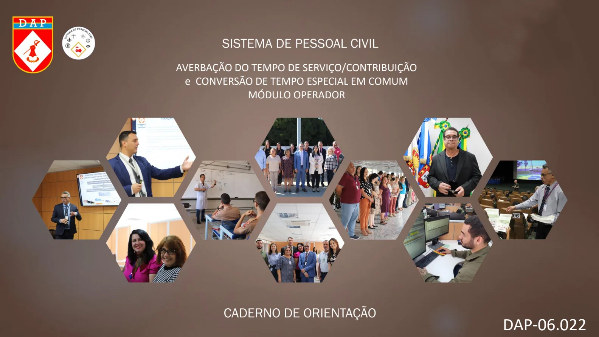
a) É dever do servidor/empregado público, da Organização Militar
(OM) e da Região Militar (RM) ler e acompanhar a atualização da
legislação que se refere aos assuntos tratados neste Caderno de
Orientação;
b) O operador deve estar ciente de todos os conceitos e
procedimentos legais e operacionais, além de saber orientar os
servidores sobre o assunto.
c) Na dúvida sobre a legislação de referência e conceitos, consultar o
Caderno de Orientação nº DAP-06.021 - AVERBAÇÃO DO TEMPO
DE SERVIÇO/CONTRIBUIÇÃO e CONVERSÃO DE TEMPO ESPECIAL
EM COMUM - MÓDULO SERVIDOR
Ver página original — tabelas, imagens e diagramas
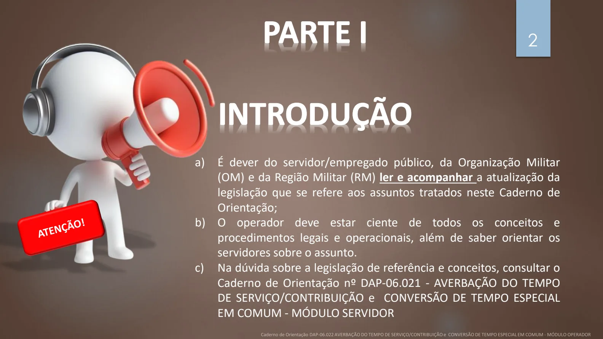
Esta página contém conteúdo gráfico. Consulte a reprodução original abaixo.
Ver página original — tabelas, imagens e diagramas
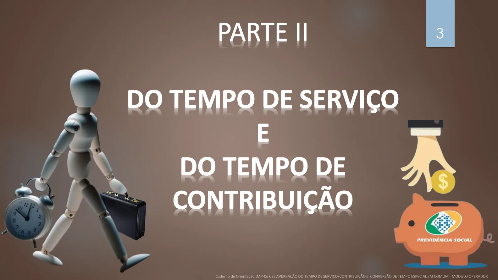
Tempo de serviço considerado
PDF · p. 41. TEMPO DE SERVIÇO:
1.1. TEMPO CONSIDERADO: São considerados como tempo de serviço no cargo efetivo e tempo na carreira,
para fins de aposentadoria, além do tempo de efetivo exercícios das atribuições do cargo, as ausências, os
afastamentos e as licenças consideradas como de efetivo exercício pela referida legislação ou pelas
legislações esparsas, conforme segue:
1.1.1 As ausências:
Por 8 (oito) dias
consecutivos em razão
de:
Casamento
Falecimento do cônjuge, companheiro,
pais, madrasta ou padrasto, filhos,
enteados, menor sob guarda ou tutela e
irmãos
Por 1 (um) dia, para doação de sangue
Pelo período comprovadamente
necessário para alistamento ou
recadastramento eleitoral,
limitado, em qualquer caso, a 2 (dois)
dias
Ver página original — tabelas, imagens e diagramas
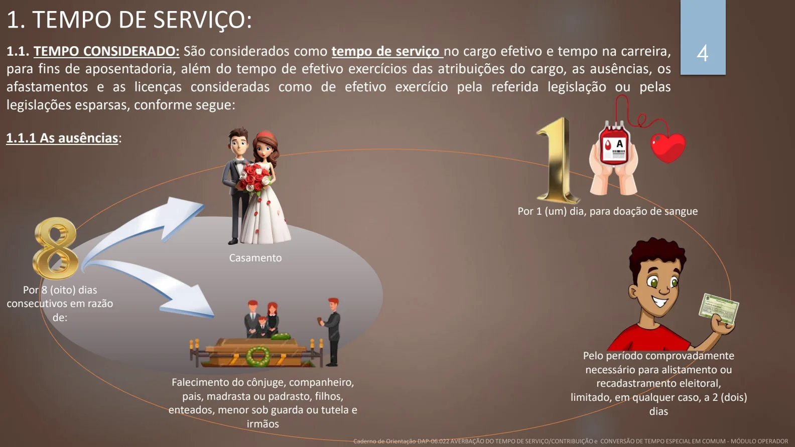
Tempo de serviço considerado
PDF · p. 551.1.2. Os seguintes afastamentos constantes no art. 102 da Lei 8.112, de 1990:
Cessão, com ou sem remuneração, para ter
exercício em outro órgão ou entidade dos
Poderes da União, dos Estados, ou do
Distrito Federal e dos Municípios, nos
termos do art. 93 da Lei nº 8.112, de 1990,
e seus regulamentos
Exercício de cargo ou função de governo
ou administração, em qualquer parte do
território nacional, por nomeação do
Presidente da República
Participação em programa de treinamento
regularmente instituído ou em programa de pós-
graduação stricto sensu no País, conforme
dispuser o regulamento
Desempenho de mandato eletivo
federal, estadual, municipal ou do
Distrito FederalO tempo disponível a júri e outros serviços
obrigatórios por lei
Missão ou estudo no exterior, quando autorizado o
afastamento, conforme dispuser o
regulamento
Férias
1. TEMPO DE SERVIÇO (cont.):
Ver página original — tabelas, imagens e diagramas
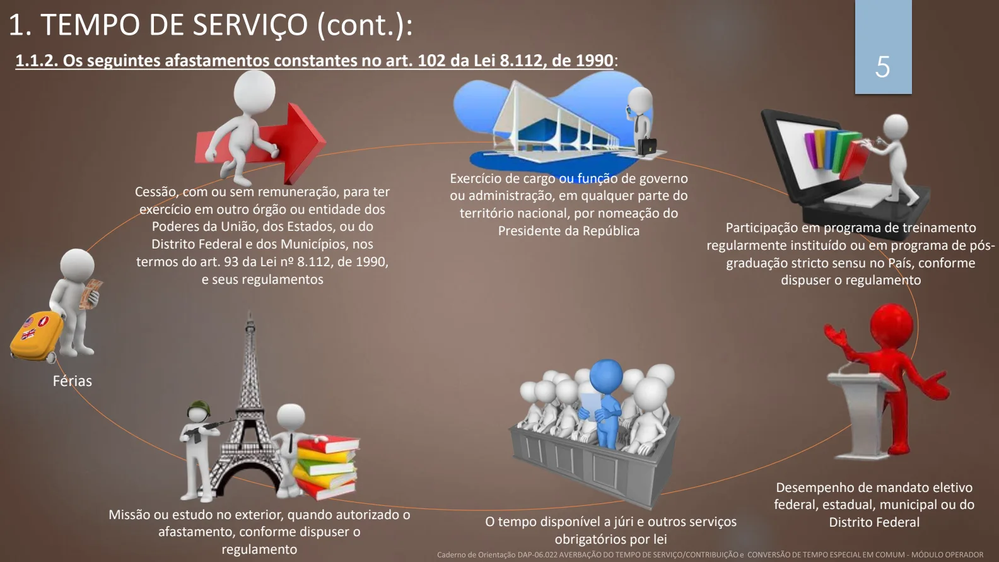
Tempo de serviço considerado
PDF · p. 661.1.3. As seguintes licenças constantes no art. 102 da Lei 8.112, de 1990:
à gestante, à adotante e à
paternidade, e suas prorrogações
para tratamento da própria
saúde, até o limite de vinte e
quatro meses, cumulativo ao
longo do tempo de serviço
público prestado à União, em
cargo de provimento efetivo
para o desempenho de mandato
classista ou participação de
gerência ou administração em
sociedade cooperativa constituída
por servidores para prestar serviços
a seus membros
por motivo de acidente em serviço
ou doença profissional
para capacitação, conforme
dispuser o regulamento
por convocação para o
serviço militar
deslocamento para a nova sede de
que trata o art. 18 da Lei nº 8.112, de
1990
participação em competição desportiva
nacional ou convocação para integrar
representação
desportiva nacional, no País ou no exterior,
conforme disposto em lei específica
licença para atividade política,
no uso do art. 86, § 2º, da Lei
n. 8.112, de 1990
conversão da pena de suspensão em
multa, nos termos do § 2º do art. 130
da Lei nº 8.112, de
1990
1. TEMPO DE SERVIÇO (cont.):
Ver página original — tabelas, imagens e diagramas
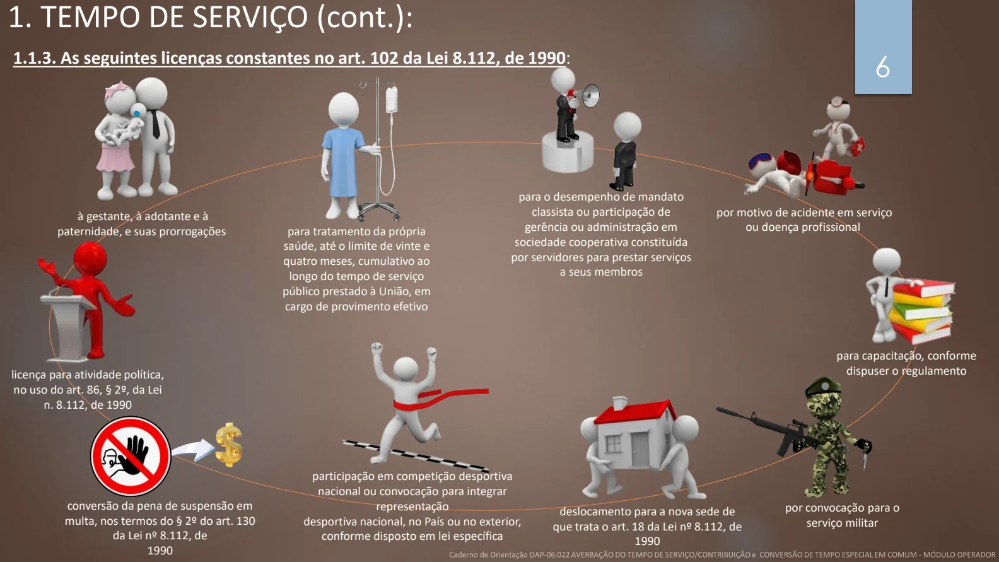
Tempo de serviço considerado
PDF · p. 771.1.4. As seguintes situações amparadas por legislações esparsas:
a licença para tratamento de
saúde de pessoal da família do
servidor, com remuneração,
até 30 (trinta) dias
outros afastamentos considerados como
de efetivo exercício previstos nas
legislações dos planos, carreiras e cargos,
ou legislações esparsas.
1. TEMPO DE SERVIÇO (cont.):
Ver página original — tabelas, imagens e diagramas
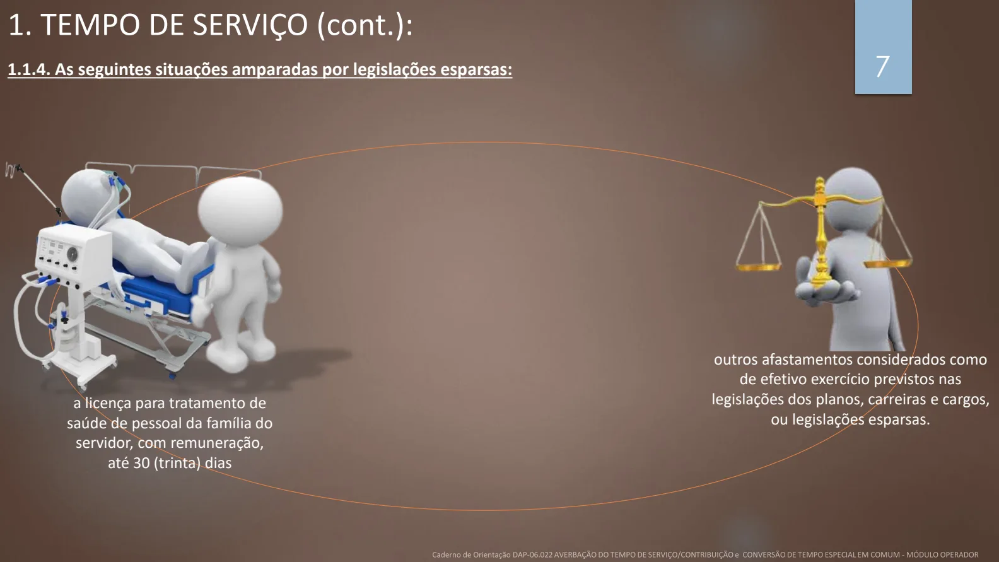
Tempo de serviço considerado
PDF · p. 881.1.5. São considerados como tempo de efetivo exercício no serviço público, para fins de aposentadoria,
além das situações supramencionadas, as seguintes situações:
o tempo prestado às
Forças Armadas (art. 100
da Lei n ° 8.112, de 1990 e
o tempo relativo a tiro de
guerra
o tempo de serviço
prestado em virtude de
contratação temporária no
serviço público, com base na
Lei nº 8.745, de 1993 (art.
16 da referida Lei)
tempo de serviço prestado à
administração pública estadual,
distrital e municipal
tempo de exercício exclusivamente de
cargo em comissão declarado em lei de
livre nomeação e exoneração ou de função
pública e tempo de emprego público em
empresa pública, sociedade de economia
mista e nos conselhos de fiscalização
profissional de qualquer dos entes
federativos
1. TEMPO DE SERVIÇO (cont.):
Ver página original — tabelas, imagens e diagramas
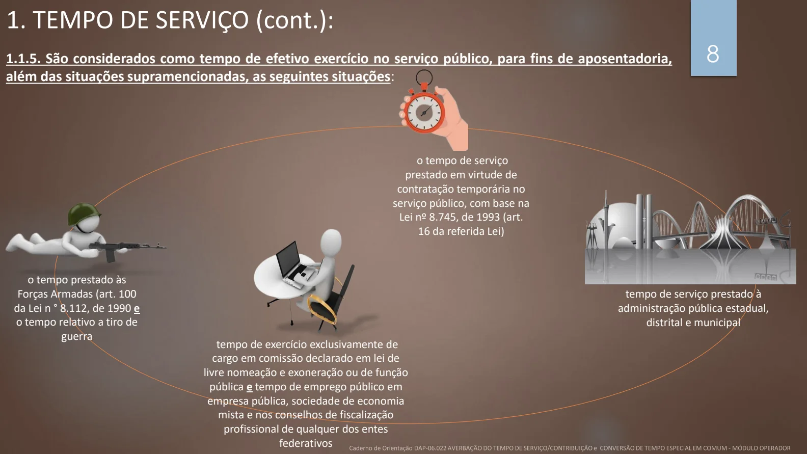
Tempo de serviço considerado
PDF · p. 991.1.5. São considerados como tempo de efetivo exercício no serviço público, para fins de aposentadoria,
além das situações supramencionadas, as seguintes situações (cont.):
1.952
1990
o tempo de serviço prestado pelo servidor que era
regido pela Lei nº 1.711, de 1952, sob
qualquer regime jurídico, inclusive sob a CLT, em
órgão da administração direta e autarquias, da
União, Estados, Distrito Federal e Municípios, em
período anterior à vigência da Lei nº 8.112, de
1990, conforme a Lei n° 6.936, de 31 de agosto de
1981
o tempo de serviço prestado pelo servidor que era
regido pela Lei nº 1.711, de 1952, na
qualidade de extranumerário, diarista ou tarefeiro,
bem como o retribuído à conta de dotação global,
desde que legalmente considerado para aposentadoria
e disponibilidade, a partir de 15 de dezembro de 1980,
na forma da Lei nº 6.890, de 11 de dezembro de 1980
o tempo de serviço relativo ao Centro de Preparação
de Oficiais da Reserva e de outros órgãos análogos,
reconhecidos na forma da lei e das normas emanadas
das autoridades militares competentes, a ser apurada
proporcionalmente à razão de de 1 (um) dia de tempo
de serviço para o período de cada 8 (oito) horas de
instrução, em consonância com as regras estatuídas
no art. 134, § 2º, da Lei 6.880, de 09 de dezembro de
1980, e art. 198, § 1º, do Decreto nº 57.654, de 20 de
janeiro de 1966
a licença para tratamento da própria saúde, por
doença especificada no art. 104, da Lei nº
1.711, de 1952
outros afastamentos e licenças que forem
considerados como de efetivo por lei.
1. TEMPO DE SERVIÇO (cont.):
Ver página original — tabelas, imagens e diagramas
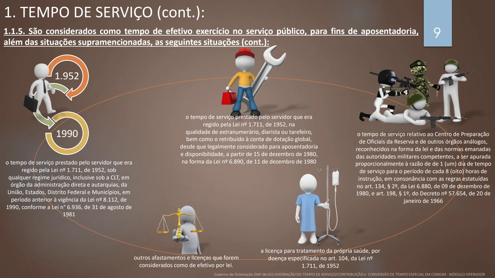
Tempo não considerado
PDF · p. 10101.2. TEMPO NÃO CONSIDERADO: NÃO SERÃO CONSIDERADOS como tempo no cargo efetivo, tempo na
carreira e tempo de efetivo exercício no serviço público:
RPPS
RGPS
1. TEMPO DE SERVIÇO (cont.):
os tempos de contribuições
concomitantes
a licença para tratar de
interesses particulares
prevista no art. 91, inciso VI,
da Lei n° 8.112, de 1990
a licença por motivo de
afastamento do cônjuge, servidor
público civil ou militar na forma do
art. 84, § 1º, da Lei n° 8.112, de
1990
a licença por motivo de doença em
pessoa da família, sem
remuneração na forma do art. 83
da Lei nº 8.112, de 1990
a licença até 30 (trinta) dias, sem
remuneração, após a conclusão do serviço
militar (art. 85,
parágrafo único, da Lei nº 8.112, de 1990)
Ver página original — tabelas, imagens e diagramas
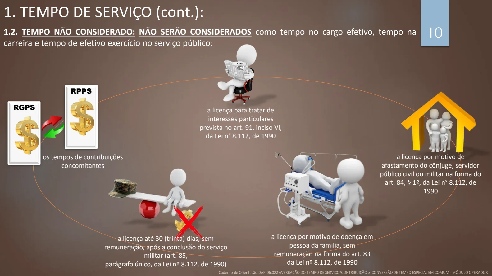
Tempo não considerado
PDF · p. 11111.2. TEMPO NÃO CONSIDERADO: NÃO SERÃO CONSIDERADOS como tempo no cargo efetivo, tempo na
carreira e tempo de efetivo exercício no serviço público (cont.):
1. TEMPO DE SERVIÇO (cont.):
a licença sem remuneração,
para escolha de candidato em
convenção partidária (art. 86
da Lei nº 8.112, de 1990)
afastamento para servir em organismo
internacional de que o Brasil participe
ou com o qual coopere, em
conformidade com o art. 9º, do Anexo
II, da Portaria SGP/SEDGG/ME nº
10.360, de 6 de dezembro de 2022
o período correspondente à
pena de suspensão aplicada
em casos de falta grave ou de
reincidência prevista no art.
130 da Lei nº 8.112, de 1990
as faltas não justificadas
previstas no art. 44,
inciso I, da Lei nº 8.112,
de 1990
Ver página original — tabelas, imagens e diagramas
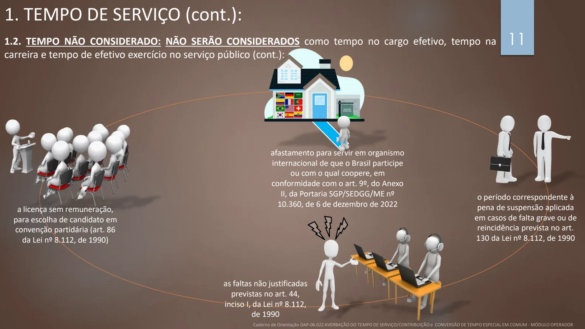
Tempo não considerado
PDF · p. 12121.2. TEMPO NÃO CONSIDERADO: NÃO SERÃO CONSIDERADOS como tempo no cargo efetivo, tempo na
carreira e tempo de efetivo exercício no serviço público (cont.):
1. TEMPO DE SERVIÇO (cont.):
tempo especial convertido em
comum, nos termos legais
outros afastamentos
não considerados com
de efetivo exercício
pela legislação
Os períodos em que o servidor ficou
afastado sem remuneração, mas houve
contribuições previdenciárias para fins de
manutenção da filiação ativa ao RPPS da
União nos termos do §3º do art. 183
da Lei nº 8.112, de 11 de dezembro de 1990
o período de licença-
prêmio convertida em
dobro
Ver página original — tabelas, imagens e diagramas
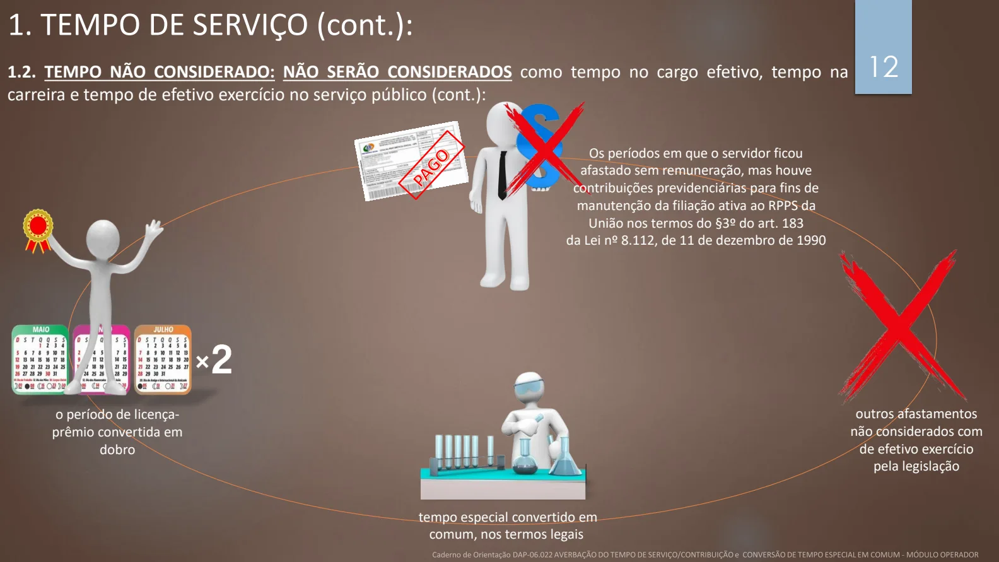
Tempo de contribuição
PDF · p. 132. TEMPO DE CONTRIBUIÇÃO:
2.1. Será considerado, para fins de aposentadoria, como tempo de contribuição:
os períodos efetivamente
laborados pelo servidor
ATÉ 16 de dezembro de
1998, mesmo que não
tenha sido realizado a
contribuição o RPPS da
União
os períodos efetivamente
laborados pelo servidor
APÓS 16 de dezembro de
1998, desde que haja a
efetiva contribuição ao RPPS
da União
Os períodos de
licenças e os
afastamentos,
observando-se
os seguintes
parâmetros:
ATÉ 16.12.1998, todas a licenças e
afastamentos considerados como de
efetivo exercício pela legislação, nos
termos do art. 4º da EC 20, de 15 de
dezembro de 1998.
de 17.12.1998 a 18.12.2002, data
da Medida Provisória nº 86, de
2002, convertida na Lei nº 10.667,
de 14 de maio de 2003, o tempo
em que tenha havido a respectiva
contribuição do servidor a regimes
de previdência, seja próprio ou
geral.
A PARTIR DE 19.12.2002 será considerado o
tempo em que haja contribuição para o Plano
de Seguridade Social do Servidor - PSS - ou ao
RGPS, na condição de segurado obrigatório.
Ver página original — tabelas, imagens e diagramas
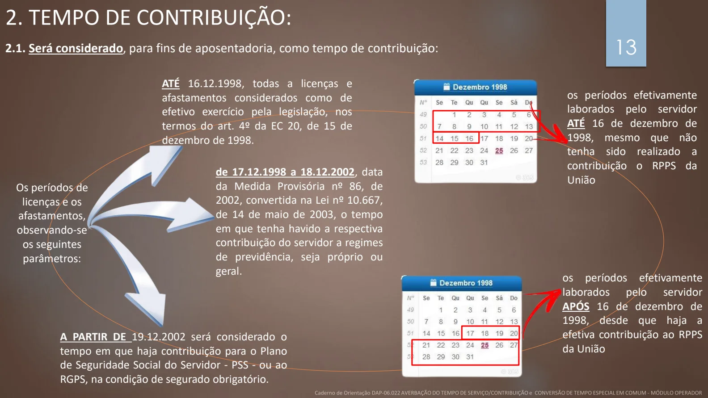
Tempo de contribuição
PDF · p. 142. TEMPO DE CONTRIBUIÇÃO:
2.1. Será considerado, para fins de aposentadoria, como tempo de contribuição (cont.):
O período de disponibilidade.
PERÍODO DE ATIVIDADE RURAL, que deverá
ser comprovado mediante certidão emitida
pelo Regime Geral de Previdência Social,
que comprove o recolhimento das
contribuições previdenciárias à época da
realização da atividade rural ou, mesmo a
posteriori, de forma indenizada.
O período de LICENÇA-
PRÊMIO CONVERTIDA EM
DOBRO; nos termos do art.
7º da Lei nº 9.527, de 10 de
dezembro de 1997.
a conversão de tempo especial
em comum a que se refere o
art. 40 do Anexo II da Portaria
nº 10.360, de 2022.
O tempo de aluno aprendiz, mesmo após o
advento da Lei nº 3.552, de 16 de fevereiro de
1959, devendo ser apresentada certidão de
tempo de serviço que conste as informações
citadas na página X deste Caderno de
Orientação.
Ver página original — tabelas, imagens e diagramas
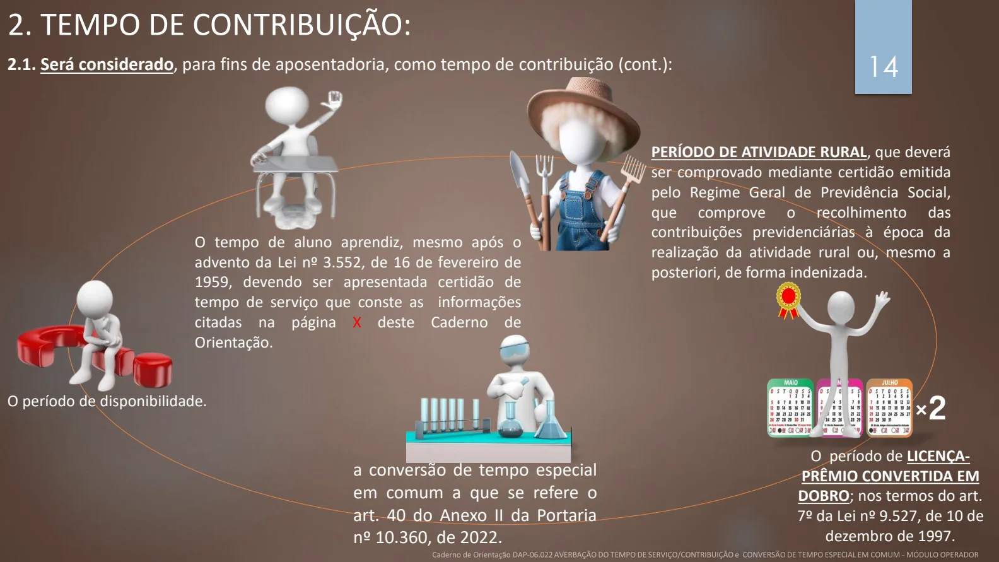
Tempo de contribuição
PDF · p. 152. TEMPO DE CONTRIBUIÇÃO:
2.2. Outras observações sobre o tempo de contribuição:
As contribuições ao RPPS da União deverão observar a normatização realizada pela Secretaria da
Receita Federal do Brasil, em especial as constantes na Instrução Normativa RFB nº 2.097, de 18 de
julho de 2022.
Não é considerado como tempo de contribuição, em caso de reversão, o período em que o servidor
aposentado contribuiu ao RPPS da União, em face da determinação constante no §18 do art. 40 da
Constituição Federal de 5 de outubro de 1988.
RPPS
Ver página original — tabelas, imagens e diagramas
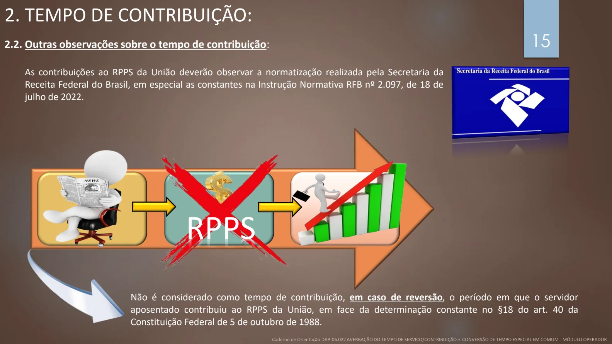
Tempo de contribuição
PDF · p. 162. TEMPO DE CONTRIBUIÇÃO:
d) Não será admitida a simples percepção de auxílio
financeiro ou em bens, bolsas de estudo ou de subsídios
diversos concedidos aos alunos.
a) comprovação da condição de aluno-aprendiz, baseada em
documentos que comprovem o labor do então estudante na execução
de encomendas recebidas pela escola
b) retribuição em prestação pecuniária ou em auxílios materiais à
conta do Orçamento à título de contraprestação por labor na
execução de bens e serviços destinados a terceiros em montante
correspondente a uma fração da renda auferida com a execução das
encomendas.
c) menção expressa do período trabalhado, desprezando-se o cômputo do
período de férias escolares
2.3. Sobre o tempo de aluno-aprendiz:
2.3.1. Para que esse tempo seja considerado, deve ser apresentada certidão de tempo de serviço que conste as seguintes informações :
Ver página original — tabelas, imagens e diagramas
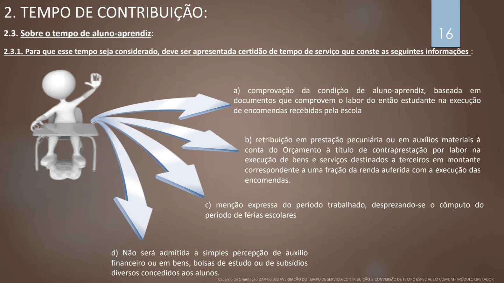
Tempo de contribuição
PDF · p. 172. TEMPO DE CONTRIBUIÇÃO:
2.3. Sobre o tempo de aluno-aprendiz (cont.):
2.3.2. A competência para o reconhecimento da atividade de aluno-aprendiz será do:
RPPS DA UNIÃO:
RPPS DO ENTE
FEDERATIVO:
para os casos em que a
atividade foi exercida
em instituição de
ensino federal e antes
do advento da Lei nº
3.780, de 1960
para os casos em que a atividade
foi exercida em instituição de
ensino pública e desde que no
momento da atividade existisse
RPPS devidamente instituído
para os demais casos
O tempo de aluno-aprendiz deve ser
averbado junto ao regime
previdenciário que estava filiado à
época da prestação da atividade, tendo
direito à emissão de CTC para fins de
contagem recíproca.
Ver página original — tabelas, imagens e diagramas
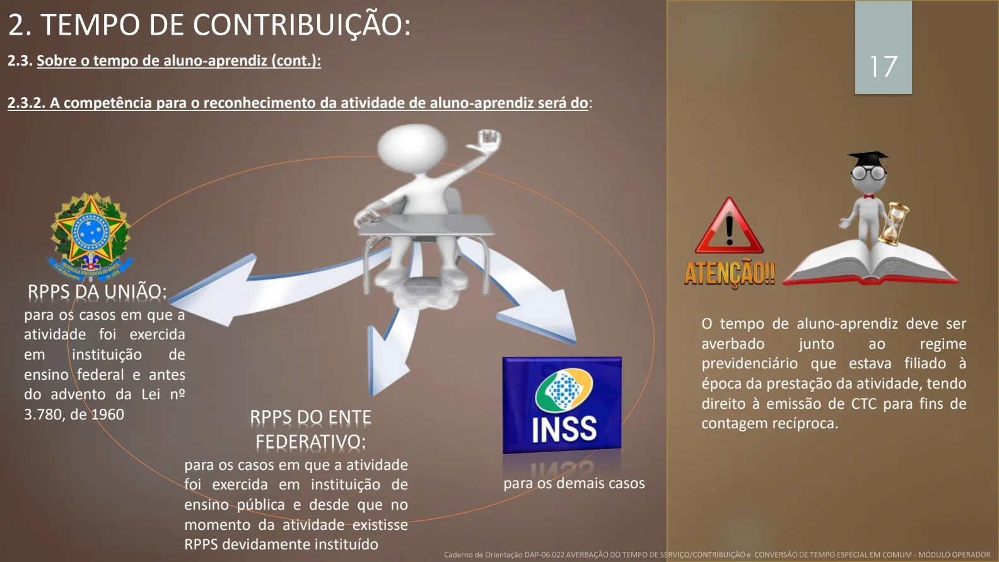
Tempo de contribuição
PDF · p. 18CURSO DE
FORMAÇÃO
18
2. TEMPO DE CONTRIBUIÇÃO:
2.4. Período de Curso de Formação:
2.4.1. O candidato habilitado para participar em programa de formação, decorrente de concurso público, inclusive, o
candidato que seja servidor, contará o tempo destinado ao seu cumprimento, conforme segue:
Entre 25.11.1995 e 15.12.1998, data anterior a da publicação da
Emenda Constitucional nº 20, de 15 de dezembro de 1998, o tempo
será considerado como contributivo no RPPS da União,
independentemente de contribuição e de o candidato aprovado no
programa de formação ser ou não servidor público federal.
Até 24.11.1995, não há possibilidade de contribuição
ao RPPS - União, em face da ausência de amparo legal,
porém, este tempo poderá ser averbado caso o
interessado apresente CTC obtida junto ao Regime
Geral da Previdência Social - RGPS.
Ver página original — tabelas, imagens e diagramas
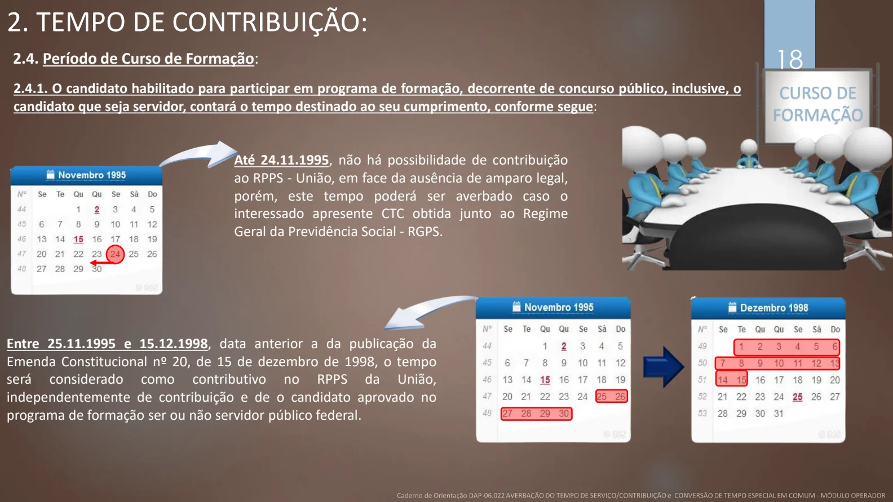
Tempo de contribuição
PDF · p. 192. TEMPO DE CONTRIBUIÇÃO:
A partir de 16.12.1998, com a entrada em vigor da EC nº 20, de 15 de dezembro de 1998:
a) Antes da regulamentação pela Instrução Normativa nº 1.332, de 14 de fevereiro de 2013, da
Secretaria da Receita Federal do Brasil, revogada pela Instrução Normativa RFB nº 2.097, de 18
de julho de 2022:
1 - Caso o candidato seja servidor público federal e opte pela remuneração do cargo
efetivo, o tempo de curso de formação será considerado como tempo de contribuição.
2 - Caso o candidato seja servidor público federal e opte pelo auxílio financeiro, o tempo
de curso de formação será considerado como tempo de contribuição somente se houve
contribuição ao RPPS da União, nos termos da legislação de vigência à época.
3 - Caso o candidato não seja servidor público federal, o tempo de curso de formação
será considerado como tempo de contribuição SOMENTE se houve contribuição ao
RPPS da União, nos termos da legislação de vigência à época.
Servidor Público
Federal,
optante pela
remuneração
Servidor Público
Federal,
optante
pelo
auxílio financeiro
2.4. Período de Curso de Formação:
2.4.1. O candidato habilitado para participar em programa de formação, decorrente de concurso público, inclusive, o
candidato que seja servidor, contará o tempo destinado ao seu cumprimento, conforme segue (cont.):
Ver página original — tabelas, imagens e diagramas
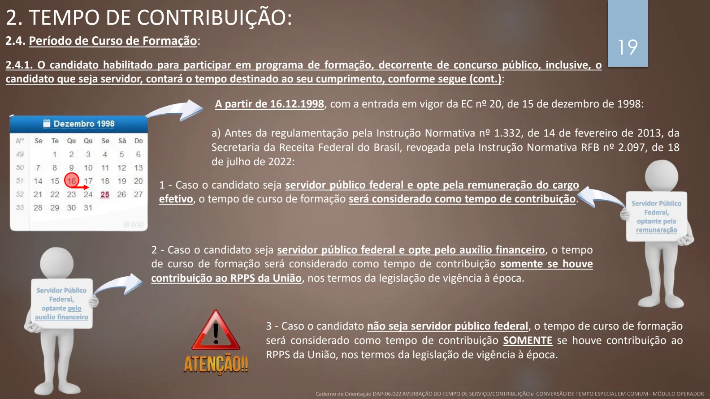
Tempo de contribuição
PDF · p. 202. TEMPO DE CONTRIBUIÇÃO:
A partir de 16.12.1998, com a entrada em vigor da EC nº 20, de 15 de dezembro de 1998:
b) após a regulamentação pela Instrução Normativa nº 1.332, de 14 de fevereiro de 2013, da
Secretaria da Receita Federal do Brasil, revogada pela Instrução Normativa RFB nº 2.097, de 18 de
julho de 2022:
1 - Caso o candidato seja servidor público federal e opte pela remuneração do cargo
efetivo e haja a respectiva contribuição ao RPPS da União, o tempo de curso de
formação será considerado como tempo de contribuição.
2 - Caso o candidato seja servidor público federal e opte pelo auxílio financeiro, o tempo de
curso de formação será considerado como tempo de contribuição somente se houver a
contribuição ao RPPS da União, nos termos do art. 15 da Instrução Normativa nº 1.332, de
14 de fevereiro de 2013, revogada pela Instrução Normativa RFB nº 2.097, de 18 de julho de
2022.
3 - Caso o candidato não seja servidor público federal, o tempo de
curso de formação será considerado como tempo de contribuição
SOMENTE com base em certidão obtida junto ao Instituto Nacional do
Seguro Social (INSS).
Servidor Público
Federal,
optante pela
remuneração
Servidor Público
Federal,
optante
pelo
auxílio financeiro
2.4. Período de Curso de Formação:
2.4.1. O candidato habilitado para participar em programa de formação, decorrente de concurso público, inclusive, o
candidato que seja servidor, contará o tempo destinado ao seu cumprimento, conforme segue (cont.):
Ver página original — tabelas, imagens e diagramas
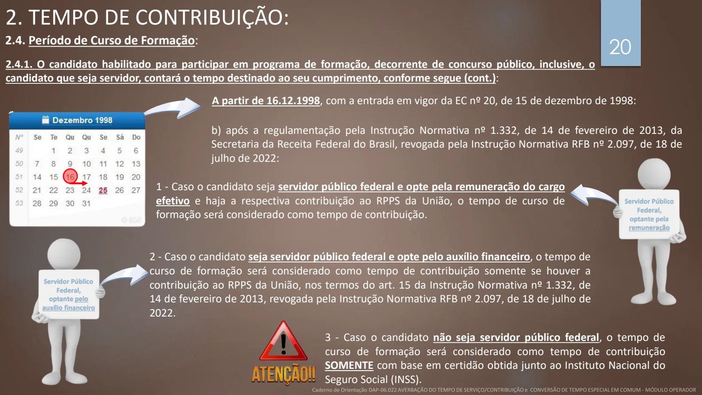
Tempo de contribuição
PDF · p. 212. TEMPO DE CONTRIBUIÇÃO:
Será considerado como tempo de contribuição,
independente de contribuição, até 16 de dezembro de
1998, o tempo de curso de formação que a legislação do
plano, carreiras e cargos determina como de efetivo
exercício ou para fins de aposentadoria.
2.4. Período de Curso de Formação:
2.4.1. O candidato habilitado para participar em programa de formação, decorrente de concurso público, inclusive, o candidato que seja
servidor, contará o tempo destinado ao seu cumprimento, conforme segue (cont.):
Ver página original — tabelas, imagens e diagramas
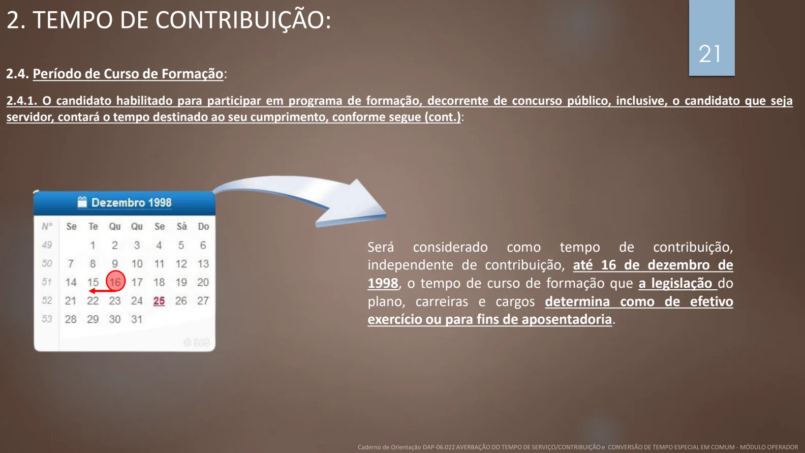
Tempo de contribuição
PDF · p. 222. TEMPO DE CONTRIBUIÇÃO:
2.5. Afastamento para Organismo Internacional:
2.5.1. O período em que o servidor federal esteve afastado para servir em organismo internacional de que o Brasil participe ou com o qual
coopere, será considerado, para fins de aposentadoria, conforme segue:
1- De 12.12.1990 a 3.07.1997 - o afastamento é considerado somente como tempo de
contribuição, independentemente da existência da efetiva contribuição a qualquer regime de
previdência (Lei nº 8.112, de 1990, c/c o Decreto nº 201, de 26 de agosto de 1991).
2- De 4.07.1997 a 16.12.1998, data da Emenda Constitucional nº 20 de 15 de
dezembro de 1998 - é considerado como de efetivo exercício e será considerado
como tempo contributivo para fins de aposentadoria, independentemente de
contribuição a qualquer regime de previdência.
Ver página original — tabelas, imagens e diagramas
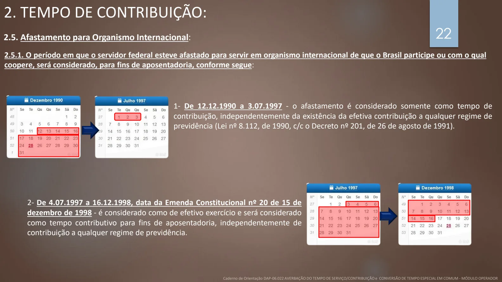
Tempo de contribuição
PDF · p. 232. TEMPO DE CONTRIBUIÇÃO:
4- A partir de 19.12.2002 - somente será considerado como tempo contributivo se o
servidor contribuir ao RPPS da União ou ao RGPS na condição de segurado
obrigatório.
3- De 17.12.1998 a 18.12.2002 - somente será considerado como tempo contributivo desde
que o servidor averbe o tempo de contribuição filiado a qualquer regime de previdência,
com exceção do RPPS da União.
2.5. Afastamento para Organismo Internacional:
2.5.1. O período em que o servidor federal esteve afastado para servir em organismo internacional de que o Brasil participe ou com o qual
coopere será considerado, para fins de aposentadoria, conforme segue:
Ver página original — tabelas, imagens e diagramas
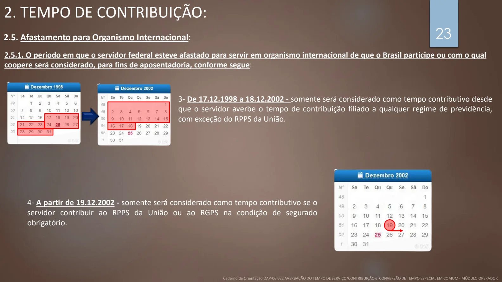
Tempo de contribuição
PDF · p. 24Esta página contém conteúdo gráfico. Consulte a reprodução original abaixo.
Ver página original — tabelas, imagens e diagramas
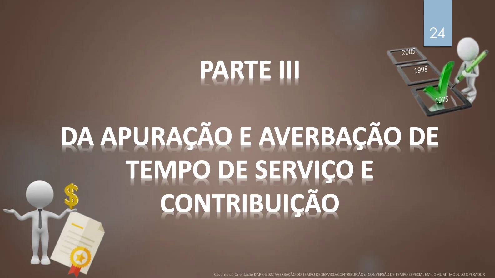
Tempo de contribuição
PDF · p. 25e) A averbação de tempo de serviço e contribuição efetuado nos assentamentos funcionais do servidor e
nos Sistemas Estruturantes de Gestão de Pessoas da Administração Pública Federal, à vista de
documentação apresentada, não é, em nenhuma medida, elemento constitutivo de direito, tendo por
objetivo apenas abreviar, em momento subsequente, o trâmite burocrático necessário ao reconhecimento
de benefícios previdenciários pela Administração.
f) O prazo decadencial para a administração rever os seus atos quanto à averbação do tempo de serviço/contribuição é de 5
(cinco) anos, nos termos do art. 54 da Lei nº 9.784, de 1999, fruindo a partir do registro dos atos pelo Tribunal de Contas da
União.
g) O prazo decadencial supramencionado será contado de forma individualizada em cada benefício previdenciário de
aposentadoria e pensão e enquanto não efetivado este registo pelo Tribunal de Contas da União, não há que se falar em
decurso de prazo decadencial.
A apuração do tempo de serviço e contribuição, para fins de aposentadoria e pensão, será realizada observando os
seguintes pressupostos:
a) será realizada conforme estabelecido na legislação de regência; e
b) deverá observar os entendimentos firmados pelo Órgão Central do SIPEC, em relação à legislação específica vigente
no momento do preenchimento dos requisitos para a aposentadoria ou instituição da pensão.
Para fins de aposentadoria, são considerados como tempo de serviço no cargo efetivo,
tempo na carreira e como tempo de contribuição, as situações transcritas nas páginas 4 a 23
deste Caderno de Orientação.
Ver página original — tabelas, imagens e diagramas
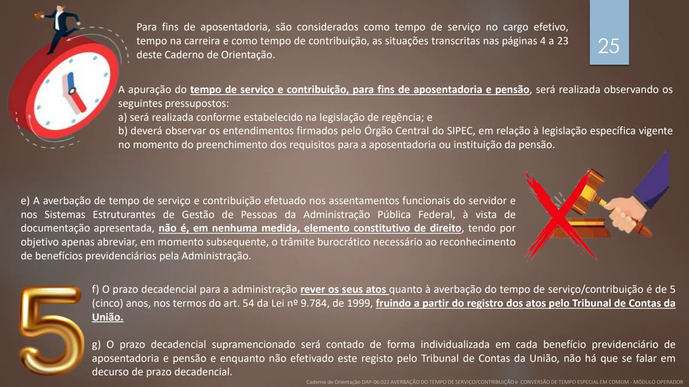
Tempo de contribuição
PDF · p. 26Esta página contém conteúdo gráfico. Consulte a reprodução original abaixo.
Ver página original — tabelas, imagens e diagramas
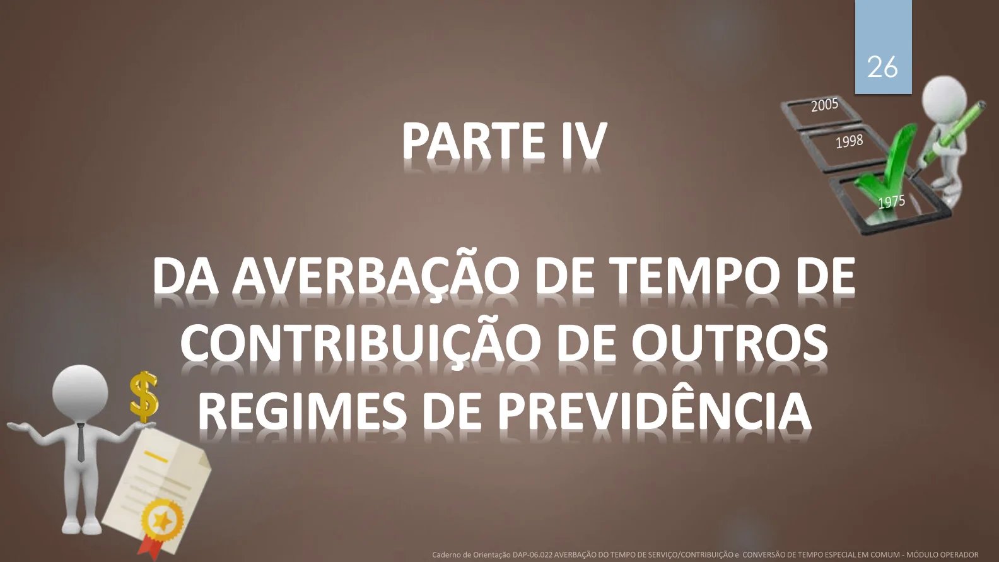
Requisitos para solicitar
PDF · p. 271. REQUISITOS DO SERVIDOR SOLICITANTE:
1. Ter prestado serviço a
órgãos/entidade públicas ou
instituições privadas.
2. Não ter averbado o tempo de
serviço em outro órgão/entidade
pública ou perante a Previdência
Social.
3. Solicitar aos órgãos/entidades
competentes: a CTC (INSS) , ou a declaração
(órgão/entidade em que contribuiu) ou
a CTSM (órgão militar).
4. O SERVIDOR deverá requerer junto à
OM, e fazer constar os
documentos necessários e descritos na e
Parte VII deste Caderno de Orientação.
Ver página original — tabelas, imagens e diagramas
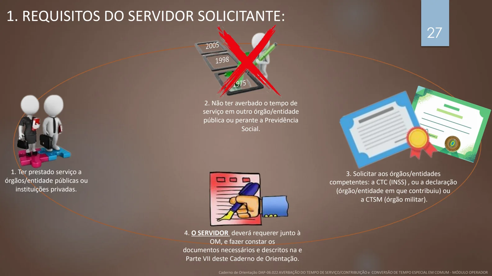
Requisitos para solicitar
PDF · p. 28Em havendo concomitância de tempo da CTC a ser averbado com o tempo
contributivo do RPPS da União, a SPC/DAP deverá RESTITUIR a CTC ao
servidor para que solicite ao regime emissor a sua substituição sem a
concomitância constatada.
*PORTARIA SGP/SEDGG/ME Nº 10.360, DE 6 DE DEZEMBRO DE 2022 – Anexo II, Capítulo III, art. 10, §§ 2º e 3º.
São validas, para fins de averbação de tempo de contribuição e compensação financeira, as certidões de tempo de serviço e de
contribuição e relações de remunerações de contribuição emitidas:
a) em data anterior à publicação da Portaria MPS nº 154, de 15 de maio de 2008, pelos órgãos da
Administração Pública dos Estados, Distrito Federal e Municípios, suas autarquias, fundações ou
unidade gestoras dos RPPS, relativamente ao tempo de serviço e de contribuição para esses
regimes;
b) nos termos da Portaria MPS nº 154, de 15 de maio de 2008, durante sua vigência; ou
c) em data anterior à vigência da Portaria MTP nº 1.467, de 02 de junho de 2022, quanto ao
tempo de serviço militar.
2. OBSERVAÇÕES:
Ver página original — tabelas, imagens e diagramas
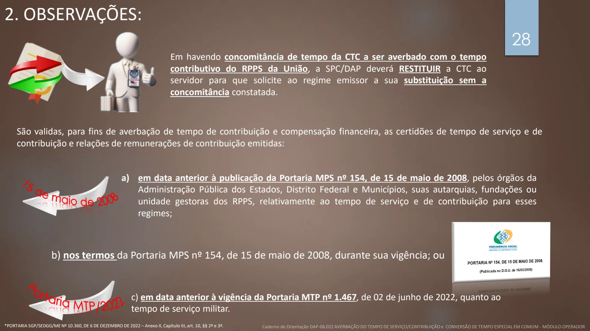
Requisitos para solicitar
PDF · p. 29*PORTARIA SGP/SEDGG/ME Nº 10.360, DE 6 DE DEZEMBRO DE 2022 – Anexo II, Capítulo III, art. 13
A averbação pelo RPPS da União do tempo de contribuição constante de CTC emitida pelo INSS
SOMENTE PODE SER EFETIVADA EM UM ÚNICO CARGO OCUPADO PELO SERVIDOR, ainda que, no
período certificado, tenha havido filiação ao RGPS pelo exercício de múltiplas atividades decorrentes
de empregos públicos ou privados ou cargos públicos.
EXCEÇÃO!
A emissão, pelo INSS, de CTC única com divisão e destinação do tempo de contribuição
para dois órgãos distintos conforme previsão do art. 130, § 7º, do Regulamento da
Previdência Social, aprovado pelo Decreto nº 3.048, de 6 de maio de 1999.
2. OBSERVAÇÕES (cont.):
Ver página original — tabelas, imagens e diagramas
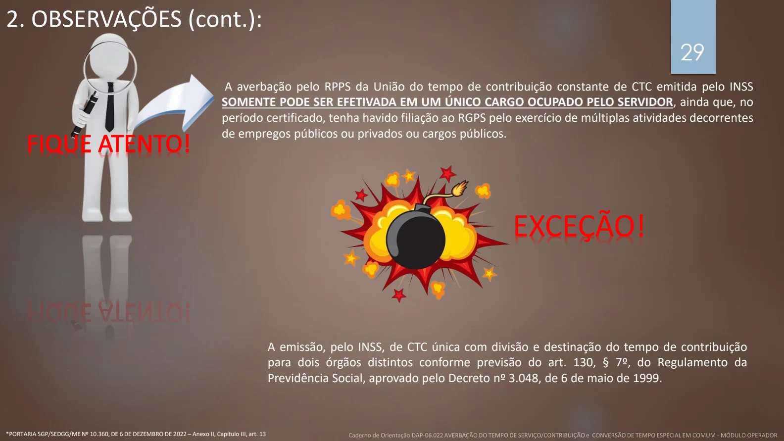
Requisitos para solicitar
PDF · p. 30*PORTARIA SGP/SEDGG/ME Nº 10.360, DE 6 DE DEZEMBRO DE 2022 – Anexo II, Capítulo III, arts. 11 e 12
É vedado o reconhecimento, pelo RPPS da União, de tempo de natureza especial
exercido com filiação a outro RPPS ou ao RGPS ainda que à vista de outros
documentos comprobatórios apresentados pelo servidor, inclusive se o tempo de
natureza especial tenha sido prestado ao ente federativo instituidor a qualquer
tempo, mas com filiação ao RGPS.
Encontram-se válidas as averbações automáticas realizadas até 18
de janeiro de 2019, que geraram a concessão de aposentadoria e
abono de permanência até essa data.
É vedada a contagem do tempo de ex-empregado público amparado pelo art. 243 da Lei nº 8.112, de
11 de dezembro de 1990, pelo RPPS da União, sem a emissão da CTC correspondente pelo Instituto
Nacional do Seguro Social - INSS.
3. VEDAÇÕES:
Ver página original — tabelas, imagens e diagramas
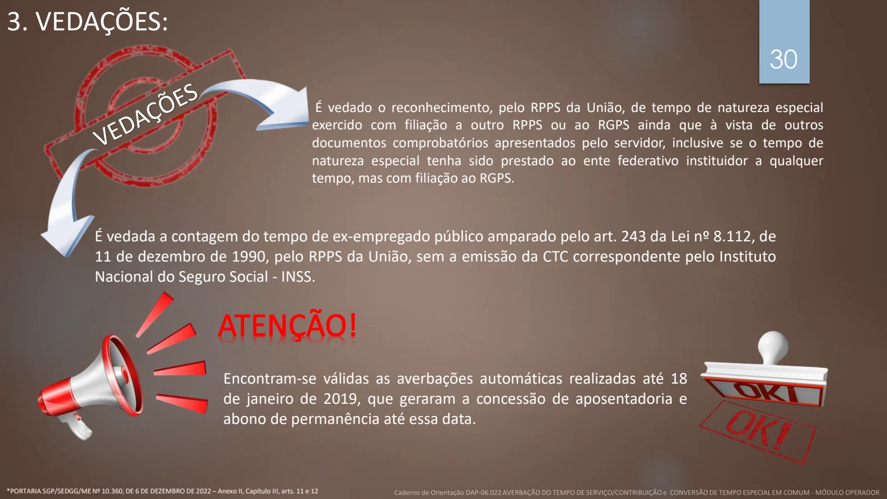
Parâmetros para averbação
PDF · p. 314. PARÂMETROS PARA A AVERBAÇÃO*:
Até 13 de novembro de 2019
Considera-se como tempo de contribuição, o tempo contado de
data a data, desde o início até a data do desligamento de atividade
abrangida pela Previdência Social ou até a data de requerimento de
benefício, descontados os períodos legalmente estabelecidos,
conforme art. 188-G do Decreto nº 3.048, de 1999, respeitadas as
regras de indenização previstas na legislação para os fins de
emissão de Certidão de Tempo de Contribuição – CTC.
1
2
Após a Emenda Constitucional nº 103, de 12 de
novembro de 2019
O tempo de contribuição deve ser considerado em
sua forma integral, independentemente do número
de dias trabalhados, desde que o valor mensal da
remuneração percebida atinja o piso legal ou
convencional da categoria ou, se inexistente, o
salário-mínimo nacional.
*PORTARIA SGP/SEDGG/ME Nº 10.360, DE 6 DE DEZEMBRO DE 2022 – Anexo II, Capítulo III, art. 18
Ver página original — tabelas, imagens e diagramas
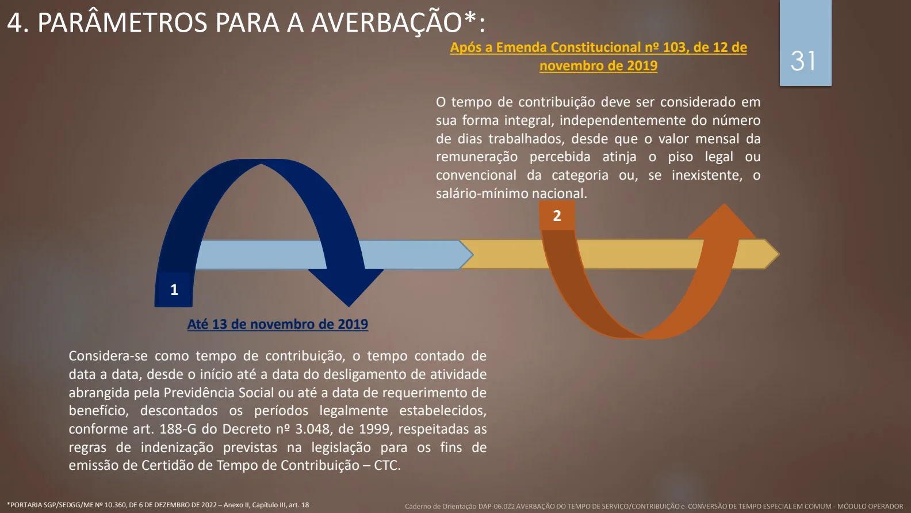
Parâmetros para averbação
PDF · p. 324. PARÂMETROS PARA A AVERBAÇÃO (cont.)*:
*PORTARIA SGP/SEDGG/ME Nº 10.360, DE 6 DE DEZEMBRO DE 2022 – Anexo II, Capítulo III, art. 19
A SPC/DAP deverá consultar, na respectiva página oficial na Internet do RPPS ou do
RGPS, as certidões de tempo de contribuição emitidas, para confirmação da
veracidade das informações, em caso de dúvida razoável.
Quando não for possível a disponibilização e confirmação da veracidade da
CTC na página da internet indicada pelo órgão emissor, o órgão destinatário
poderá solicitar ao emissor, por ofício, sua ratificação ou retificação.
Caso a CTC não tenha a veracidade confirmada ou caso seja retificada pelo
órgão emissor, eventual concessão de benefício ou vantagem já ocorrida com
base na certidão deverá ser revista, de ofício, pelo RPPS da União.
Após a conclusão do processo de revisão, o resultado deverá ser comunicado ao
órgão emissor da CTC para eventual revisão de compensação financeira, caso esta já
tenha sido requerida e concedida.
CONSULTA
RATIFICAÇÃO
OU
RETIFICAÇÃO
REVISÃO
COMUNICAÇÃ
O
Ver página original — tabelas, imagens e diagramas
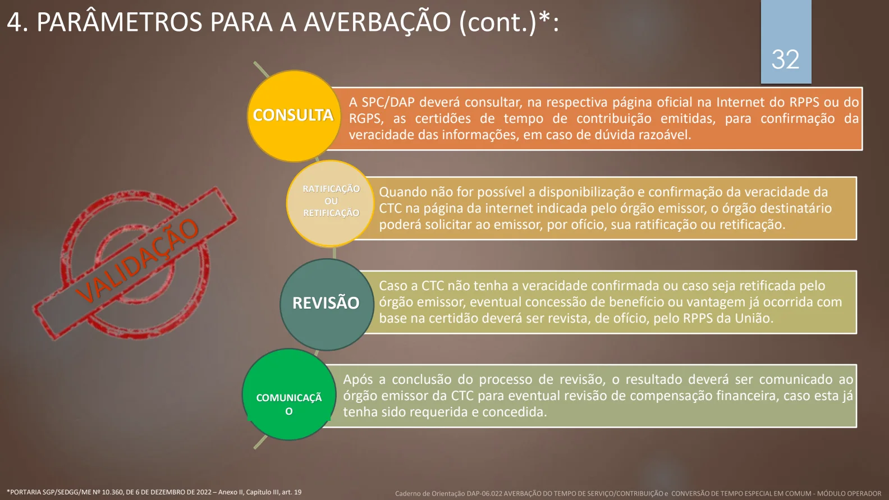
Revisão da CTC
PDF · p. 335. DA REVISÃO DA CTC:
*PORTARIA SGP/SEDGG/ME Nº 10.360, DE 6 DE DEZEMBRO DE 2022 – Anexo II, Capítulo IV, art. 32
5.1. Para possibilitar a revisão da CTC, o interessado deverá apresentar:
requerimento de cancelamento da
certidão, no qual esclarecerá o fim e a
razão do pedido
a certidão original,
anexa ao
requerimento
declaração, conforme Anexo XI da Portaria
MTP nº 1.467, de 2022, emitida pelo
regime previdenciário ou Sistema de
Proteção Social dos Militares - SPSM a que
se destinava a certidão contendo
informações sobre a utilização, ou não, dos
períodos lavrados na certidão e, em caso
afirmativo, para que fins foram utilizados.
Ver página original — tabelas, imagens e diagramas
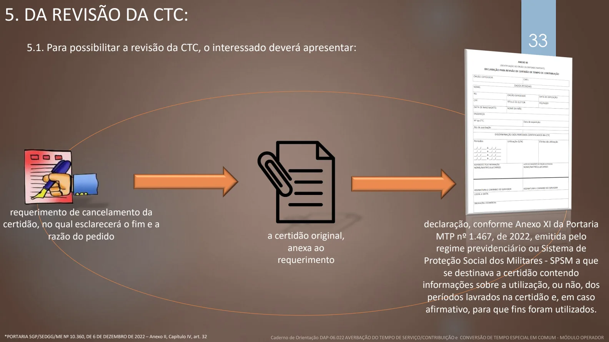
Revisão da CTC
PDF · p. 345. DA REVISÃO DA CTC:
*PORTARIA SGP/SEDGG/ME Nº 10.360, DE 6 DE DEZEMBRO DE 2022 – Anexo II, Capítulo IV, art. 34 a 36
5.1. Observações gerais:
Caberá revisão da CTC, inclusive de ofício, quando for constatado erro material e desde que tal revisão não importe
em dar à certidão destinação diversa da que lhe foi dada originariamente.
Esta revisão será precedida de solicitação ao órgão destinatário da CTC de devolução da certidão original.
Para revisão da CTC que tenha sido utilizada no RGPS, em outro RPPS ou em SPSM, aplica-se o prazo
decadencial de 5 (cinco) anos, contados da data de emissão da certidão, salvo comprovada má-fé, nos
termos do art. 54 da Lei nº 9.784, de 29 de janeiro de 1999.
Os órgãos e entidades integrantes do SIPEC fornecerão ao servidor detentor exclusivamente de cargo de
livre nomeação e exoneração e aos ocupantes de emprego ou função amparado pelo RGPS, documento
comprobatório do vínculo funcional e Declaração de Tempo de Contribuição na forma do formulário
constante no Anexo XII da Portaria MTP nº 1.467, de 2 de junho de 2022, para fins de concessão de
benefícios ou para emissão de CTC pelo RGPS.
Ver página original — tabelas, imagens e diagramas
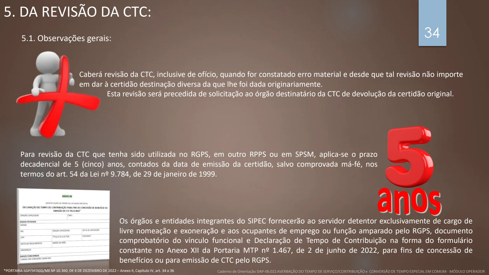
Revisão da CTC
PDF · p. 35Esta página contém conteúdo gráfico. Consulte a reprodução original abaixo.
Ver página original — tabelas, imagens e diagramas
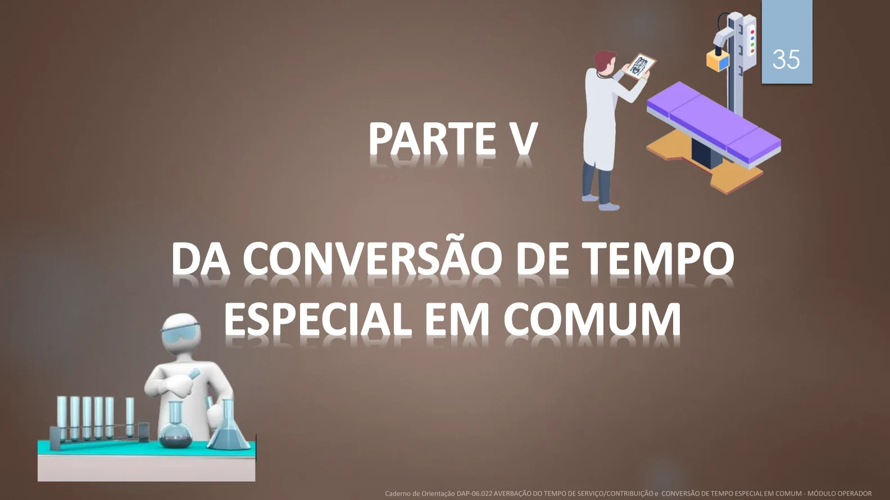
Conversão de tempo especial em comum
PDF · p. 361. CONVERSÃO DE TEMPO ESPECIAL EM COMUM:
Os servidores públicos federais
que exerceram atividades em
condições especiais prejudiciais à
saúde ou à integridade física, ATÉ
o dia 13 de novembro de 2019,
PODERÃO ter esse tempo
convertido em tempo comum
para fins de aposentadoria e
contagem recíproca de tempo de
contribuição.
Marco
temporal
Salvo decisão judicial expressa
em contrário, é VEDADA a
conversão de tempo especial em
comum para períodos laborados
com efetiva exposição a agentes
químicos, físicos e biológicos
prejudiciais à saúde, ou
associação desses agentes A
PARTIR de 13 de novembro de
2019.
*PORTARIA SGP/SEDGG/ME Nº 10.360, DE 6 DE DEZEMBRO DE 2022 – Anexo II, Capítulo IV, art. 41
1.1. Marco temporal:
Ver página original — tabelas, imagens e diagramas
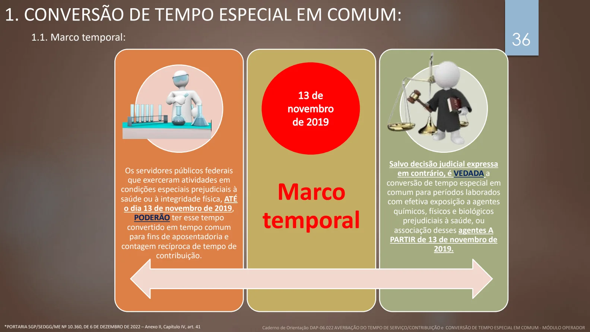
Conversão de tempo especial em comum
PDF · p. 371. CONVERSÃO DE TEMPO ESPECIAL EM COMUM:
*PORTARIA SGP/SEDGG/ME Nº 10.360, DE 6 DE DEZEMBRO DE 2022 – Anexo II, Capítulo IV, art. 42
1.2. Procedimentos para conversão do tempo especial em comum, para períodos laborados até 13 de novembro de
2019, em condições especiais prejudiciais à saúde ou à integridade física, para fins de aposentadoria:
A caracterização e comprovação
da exposição a agentes químicos,
físicos e biológicos prejudiciais à
saúde observará os
procedimentos estabelecidos no
Anexo III da Portaria
SGP/SEDGG/ME nº 10.360, de 6
de dezembro de 2022.
Utilizar os fatores de
conversão:
o processo de caracterização e comprovação
de tempo especial deverá, obrigatoriamente,
integrar o processo de concessão de
aposentadoria.
APOSENTADORIA
1,20
1,40
Ver página original — tabelas, imagens e diagramas
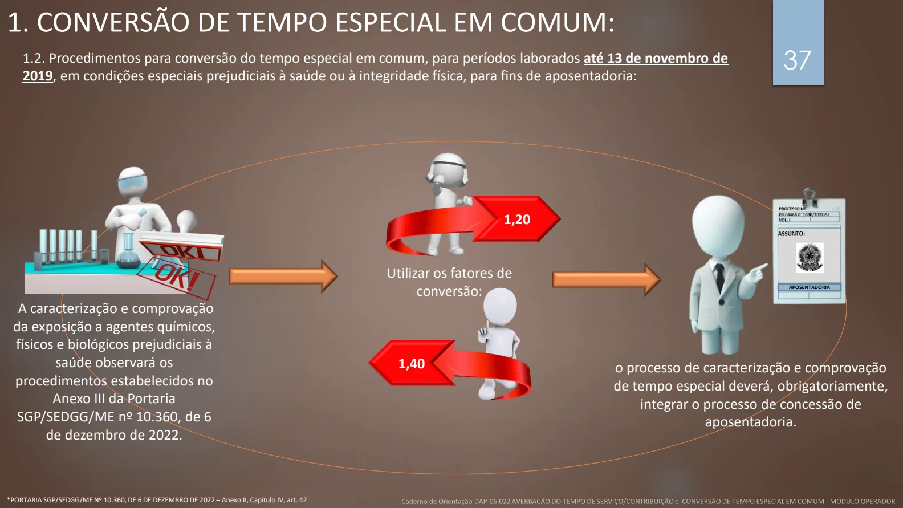
Conversão de tempo especial em comum
PDF · p. 381. CONVERSÃO DE TEMPO ESPECIAL EM COMUM:
*PORTARIA SGP/SEDGG/ME Nº 10.360, DE 6 DE DEZEMBRO DE 2022 – Anexo II, Capítulo IV, art. 42, parágrafo único.
1.3. A conversão de tempo especial em comum não se aplica:
À conversão em tempo comum do
tempo prestado pelo servidor na
condição de pessoa com deficiência, nem
de conversão de tempo exercido para
fins de aposentadoria de que trata a Lei
Complementar nº 51, de 20 de
dezembro de 1985.
Aos períodos de labor posterior a 13
de novembro de 2019.
Ao tempo de efetivo exercício das funções de
magistério na educação infantil e no ensino
fundamental e médio, na hipótese de
aposentadoria especial de professor a que se
refere o § 5º do art. 40 da Constituição Federal de
5 de outubro de 1988, na redação
anterior à reforma previdenciária de 2019.
Ao período de emprego público convertido em
cargo público pelo art. 243 da Lei nº 8.112, de
1990, que deverá ser atestado pelo RGPS.
Servidor
Ver página original — tabelas, imagens e diagramas
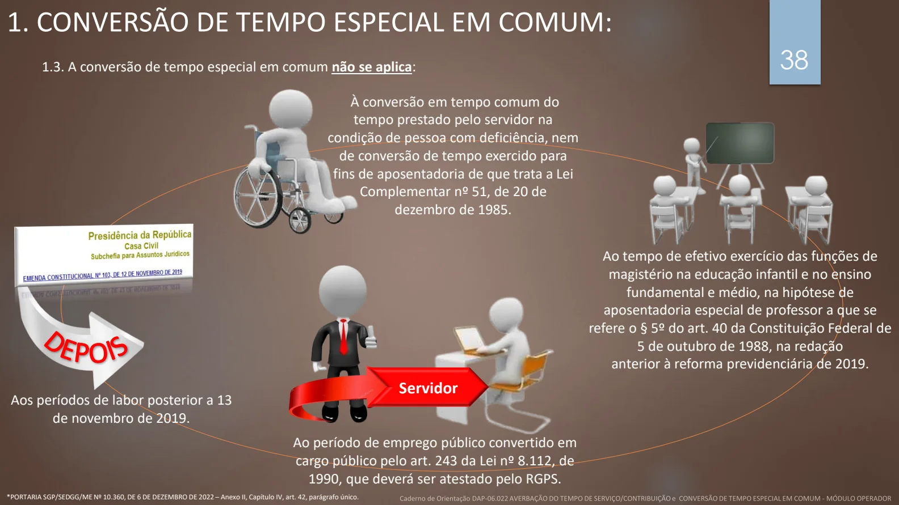
Conversão de tempo especial em comum
PDF · p. 391. CONVERSÃO DE TEMPO ESPECIAL EM COMUM*:
*PORTARIA SGP/SEDGG/ME Nº 10.360, DE 6 DE DEZEMBRO DE 2022 – Anexo III, art. 2º, §§ 1º ao 5º
O reconhecimento de tempo de serviço público do Poder Executivo federal prestado sob condições especiais,
prejudiciais à saúde ou à integridade física, dependerá de comprovação do exercício das atribuições do
cargo público nessas condições, de modo permanente, não ocasional ou intermitente, inclusive no período
em que o servidor estiver em exercício de mandato eletivo; cedido, com ou sem ônus para o cessionário, a
órgão ou entidade da administração direta ou indireta, do mesmo ou de outro ente federativo, ou afastado
do país por licenciamento.
Não será admitida prova exclusivamente testemunhal ou apenas a comprovação da percepção de
adicional de insalubridade ou periculosidade ou gratificação por trabalhos com Raios-X ou substâncias
radioativas para fins de comprovação do tempo de serviço público prestado sob condições especiais.
É vedada a caracterização de submissão a condições especiais,
prejudiciais à saúde ou à integridade física, de forma presumida, em face
da nomenclatura e atribuições dos cargos públicos se assemelharem aos
existentes na iniciativa privada.
1.4. Observações sobre a conversão:
Ver página original — tabelas, imagens e diagramas
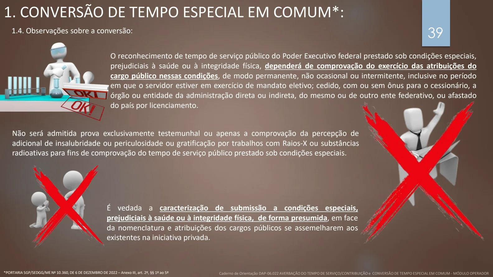
Conversão de tempo especial em comum
PDF · p. 401. CONVERSÃO DE TEMPO ESPECIAL EM COMUM:
*PORTARIA SGP/SEDGG/ME Nº 10.360, DE 6 DE DEZEMBRO DE 2022 – Anexo II, Capítulo IV, art. 43
1.4. Observações sobre a conversão (cont.):
Tempo
comum
Tempo
especial
Após a conversão de tempo especial em tempo comum, o período acrescido em decorrência da aplicação dos
fatores de conversão SERÁ CONSIDERADO como tempo de contribuição para fins de elegibilidade à
aposentadoria voluntária comum, nas regras gerais ou de transição, MAS NÃO para o cômputo dos requisitos
de tempo de efetivo exercício no serviço público, de tempo na carreira ou de tempo no cargo efetivo.
Aplica-se o mesmo entendimento à a conversão de licença prêmio em dobro de que trata o art. 7º da Lei nº
9.527, de 10 de dezembro de 1997.
1,20
1,40
É VEDADA a soma do tempo comum resultante da conversão de tempo especial em comum, a
qualquer outro tempo de natureza especial não convertido, SENDO VEDADA também a
conversão inversa, de tempo comum em tempo especial, com vistas, em ambos estes casos, à
concessão de aposentadoria voluntária especial.
Ver página original — tabelas, imagens e diagramas
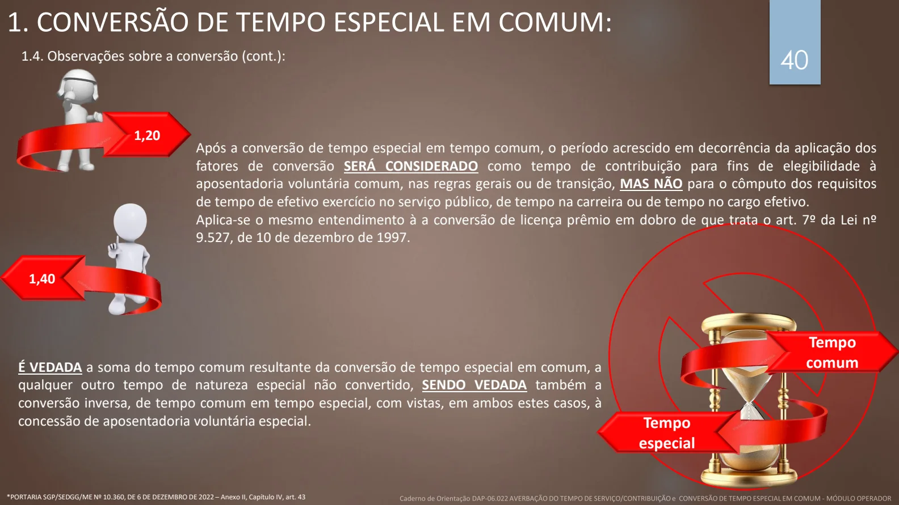
Conversão de tempo especial em comum
PDF · p. 411. CONVERSÃO DE TEMPO ESPECIAL EM COMUM*:
*PORTARIA SGP/SEDGG/ME Nº 10.360, DE 6 DE DEZEMBRO DE 2022 – Anexo III, art. 3º
1.5. O enquadramento de atividade em condições especiais observará os seguintes marcos temporais e critérios:
1.5.1. ATÉ 28 de abril de 1995, data anterior à vigência da Lei nº 9.032, de 29 de abril de 1995:
Por exposição a agentes nocivos no exercício de atribuições do
cargo público, em condições análogas às que permitem
enquadrar as atividades profissionais como perigosas, insalubres
ou penosas, conforme a classificação em função da exposição
aos referidos agentes, agrupados sob o código 1.0.0 do Quadro
anexo ao Decreto nº 53.831, de 1964, e sob o código 1.0.0 do
Anexo I do Regulamento dos Benefícios da Previdência Social,
aprovado pelo Decreto nº 83.080, de 1979.
Pela investidura de cargo cujas atribuições sejam análogas às
atividades profissionais das categorias presumidamente sujeitas
a condições especiais, consoante as ocupações/grupos
profissionais agrupados sob o código 2.0.0 do Quadro anexo ao
Decreto nº 53.831, de 25 de março de 1964, e sob o código
2.0.0 do Anexo II do Regulamento dos Benefícios da Previdência
Social, aprovado pelo Decreto nº 83.080, de 24 de janeiro de
1979.
Ver página original — tabelas, imagens e diagramas
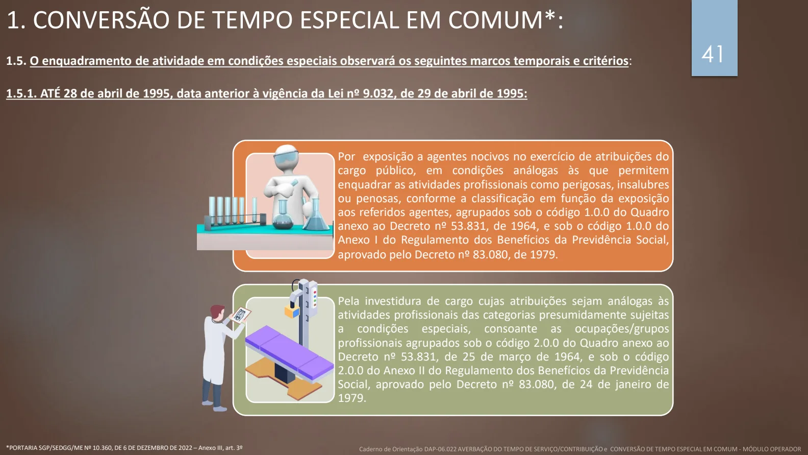
Conversão de tempo especial em comum
PDF · p. 421. CONVERSÃO DE TEMPO ESPECIAL EM COMUM*:
*PORTARIA SGP/SEDGG/ME Nº 10.360, DE 6 DE DEZEMBRO DE 2022 – Anexo III, art. 3º
1.5. O enquadramento de atividade em condições especiais observará os seguintes marcos temporais e critérios (cont.):
1.5.2. de 29 de abril de 1995 até 5 de março de 1997:
Pela investidura de cargo cujas atribuições sejam análogas às
atividades profissionais das categorias presumidamente
sujeitas a condições especiais, consoante as ocupações/grupos
profissionais agrupados sob o código 2.0.0 do Quadro anexo ao
Decreto nº 53.831, de 25 de março de 1964, e sob o código
2.0.0 do Anexo II do Regulamento dos Benefícios da
Previdência Social, aprovado pelo Decreto nº 83.080, de 24 de
janeiro de 1979.
1.5.3. De 6 de março de 1997 até 6 de maio de 1999:
1.5.4. a partir de 7 de maio de 1999:
O enquadramento de atividade especial observará a
relação dos agentes químicos, físicos, biológicos, e da
associação desses agentes constante do Anexo IV do
Regulamento da Previdência Social, aprovado pelo
Decreto nº 3.048, de 6 de maio de 1999.
O enquadramento de atividade especial observará a
relação dos agentes nocivos prejudiciais à saúde ou à
integridade física que consta do Anexo IV do
Regulamento dos Benefícios da Previdência Social,
aprovado pelo Decreto nº 2.172, de 5 de março de
1997.
Ver página original — tabelas, imagens e diagramas
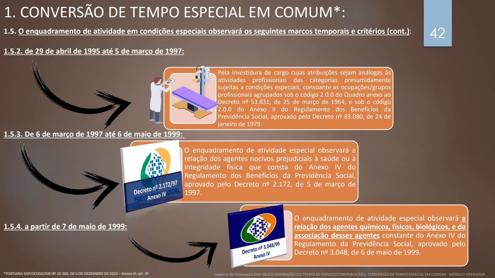
Processo administrativo para conversão
PDF · p. 432. DO PROCESSO ADMINISTRATIVO PARA A CONVERSÃO DE
TEMPO ESPECIAL EM COMUM*:
*PORTARIA SGP/SEDGG/ME Nº 10.360, DE 6 DE DEZEMBRO DE 2022 – Anexo III, art. 4º
2.1. O processo administrativo para solicitação da conversão de tempo especial em comum deverá ser INDIVIDUALIZADO
e instruído com os seguintes documentos, CUMULATIVAMENTE:
Perfil
Profissiográfico
Previdenciário -
PPP
formulário de
informações ou Perfil
Profissiográfico
Previdenciário - PPP
sobre atividades
exercidas em
condições especiais
Laudo Técnico de Condições
Ambientais do Trabalho - LTCAT
parecer da perícia médica, em
relação ao enquadramento por
exposição a agentes nocivos
portaria de nomeação do servidor para
investidura em cargo público efetivo, cujas
atividades sejam análogas às dos
profissionais das categorias
presumidamente sujeitas a condições
especiais
portaria de designação do
servidor para operar com raios
X e substâncias radioativas,
quando for o caso.
Ver página original — tabelas, imagens e diagramas
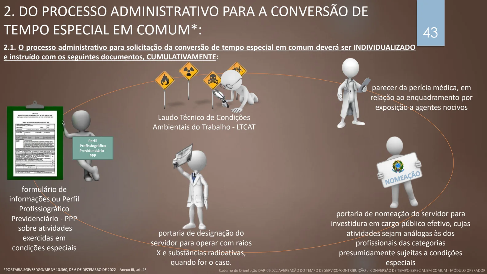
Processo administrativo para conversão
PDF · p. 442. DO PROCESSO ADMINISTRATIVO PARA A CONVERSÃO DE
TEMPO ESPECIAL EM COMUM (cont.)*:
*PORTARIA SGP/SEDGG/ME Nº 10.360, DE 6 DE DEZEMBRO DE 2022 – Anexo III, art. 5º
2.2. Sobre o formulário de informações e o Perfil Profissiográfico Previdenciário – PPP:
• No modelo instituído para o
RGPS, segundo seu período de
vigência, sob as siglas: SB-40,
DISESBE 5235, DSS-8030 ou
DIRBEN 8030
Somente será
aceito quando
emitido ATÉ 31
de dezembro de
2003:
• Conforme Anexo V da PORTARIA
SGP/SEDGG/ME Nº 10.360, DE 6
DE DEZEMBRO DE 2022
Exigência a
partir de 1º de
janeiro de 2004
Perfil Profissiográfico
Previdenciário - PPP
Ver página original — tabelas, imagens e diagramas
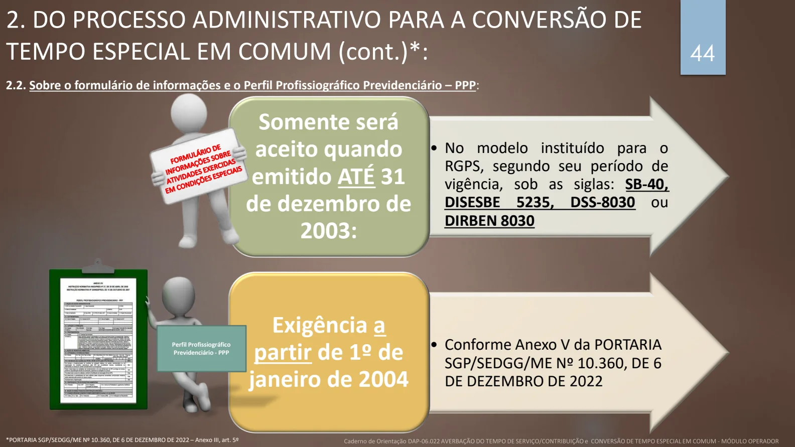
Processo administrativo para conversão
PDF · p. 45ou
45
2. DO PROCESSO ADMINISTRATIVO PARA A CONVERSÃO DE
TEMPO ESPECIAL EM COMUM(cont.)*:
*PORTARIA SGP/SEDGG/ME Nº 10.360, DE 6 DE DEZEMBRO DE 2022 – Anexo III, art. 5º, parágrafo único.
2.2. Sobre o formulário de informações e o Perfil Profissiográfico Previdenciário – PPP (cont.):
Perfil Profissiográfico
Previdenciário - PPP
Será emitido pelo órgão ou
entidade responsável pelos
assentamentos funcionais
do servidor público no
correspondente período
de exercício das
atribuições do cargo ou
emprego público em
condições especiais.
Ver página original — tabelas, imagens e diagramas
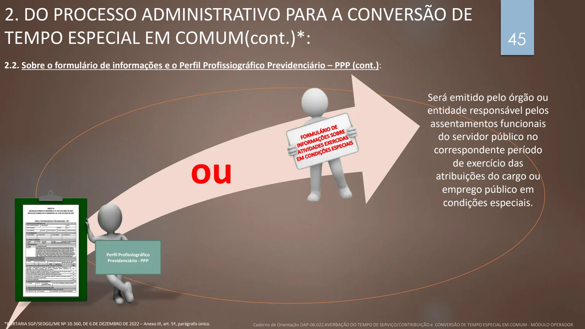
Processo administrativo para conversão
PDF · p. 462. DO PROCESSO ADMINISTRATIVO PARA A CONVERSÃO DE
TEMPO ESPECIAL EM COMUM (cont.)*:
*PORTARIA SGP/SEDGG/ME Nº 10.360, DE 6 DE DEZEMBRO DE 2022 – Anexo III, art. 6º.
O LTCAT será elaborado por
servidor público da esfera federal,
estadual, distrital ou municipal, ou
militar, ocupante de cargo público
ou posto militar de médico com
especialização em medicina do
trabalho, ou de engenheiro ou de
arquiteto com especialização em
segurança do trabalho.
2.3. Sobre o Laudo Técnico de Condições Ambientais do Trabalho - LTCAT:
Ver página original — tabelas, imagens e diagramas
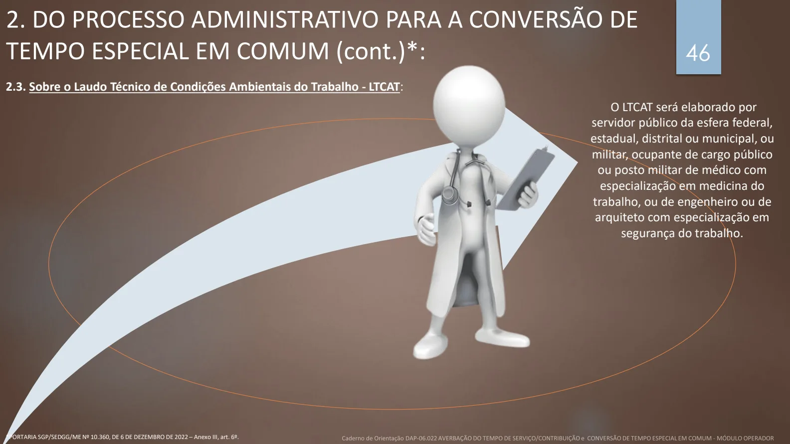
Processo administrativo para conversão
PDF · p. 472. DO PROCESSO ADMINISTRATIVO PARA A CONVERSÃO DE
TEMPO ESPECIAL EM COMUM (cont.)*:
*PORTARIA SGP/SEDGG/ME Nº 10.360, DE 6 DE DEZEMBRO DE 2022 – Anexo III, art. 6º, §§ 1º ao 3º.
2.4. Sobre a exigência do LTCAT:
O enquadramento de
atividade especial por
exposição ao agente físico
ruído, em qualquer época
da prestação do labor,
exige laudo técnico
pericial.
Em relação aos demais
agentes nocivos, o laudo
técnico pericial será
OBRIGATÓRIO para os
períodos laborados a
partir de 14 de outubro
de 1996.
É admitido o laudo técnico emitido
em data anterior ou posterior ao
exercício da atividade do servidor,
se não houve alteração no
ambiente de trabalho ou em sua
organização, desde que haja
ratificação nesse sentido, pelo
ocupante de cargo público ou posto
militar de médico com
especialização em medicina do
trabalho, ou de engenheiro ou de
arquiteto com especialização em
segurança do trabalho.
Ver página original — tabelas, imagens e diagramas
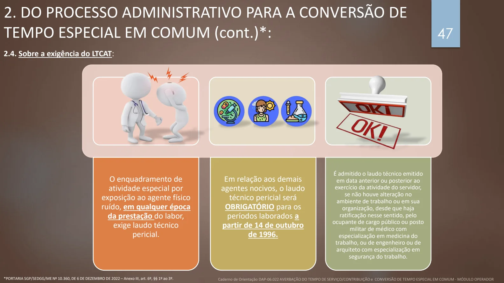
Processo administrativo para conversão
PDF · p. 482. DO PROCESSO ADMINISTRATIVO PARA A CONVERSÃO DE
TEMPO ESPECIAL EM COMUM (cont.)*:
*PORTARIA SGP/SEDGG/ME Nº 10.360, DE 6 DE DEZEMBRO DE 2022 – Anexo III, art. 7º.
2.5. Poderão ser aceitos em substituição ao LTCAT,ou ainda de forma complementar a este, os seguintes documentos:
laudos técnico-periciais emitidos
por determinação da Justiça do
Trabalho, em ações trabalhistas,
acordos ou dissídios coletivos
laudos emitidos pela Fundacentro
laudos emitidos pelo Ministério do Trabalho e
Previdência - MTP ou pelas delegacias
Regionais do Trabalho - DRT
Ver página original — tabelas, imagens e diagramas
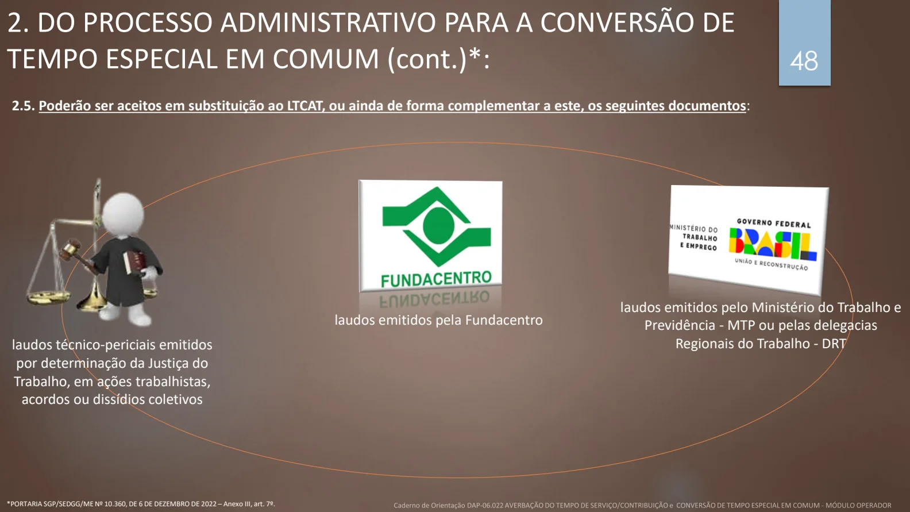
Processo administrativo para conversão
PDF · p. 492. DO PROCESSO ADMINISTRATIVO PARA A CONVERSÃO DE
TEMPO ESPECIAL EM COMUM (cont.)*:
*PORTARIA SGP/SEDGG/ME Nº 10.360, DE 6 DE DEZEMBRO DE 2022 – Anexo III, art. 7º.
2.5. Poderão ser aceitos em substituição ao LTCAT,ou ainda de forma complementar a este, os seguintes documentos (cont.):
data e local da realização da perícia.
laudos técnicos individuais
acompanhados de:
autorização escrita do órgão
administrativo competente, se
o levantamento ambiental
ficar a
cargo de responsável técnico
integrante dos quadros
funcionais de outra esfera de
Poder da União ou de governo
cópia do documento de habilitação profissional
do engenheiro de segurança do trabalho ou
médico do trabalho, indicando sua
especialidade
nome e identificação do
servidor da Administração
responsável pelo
acompanhamento do
levantamento ambiental,
quando a emissão do laudo
técnico ficar a cargo de
servidor público
pertencente aos quadros
funcionais de outras esferas
de governo ou Poder
Ver página original — tabelas, imagens e diagramas
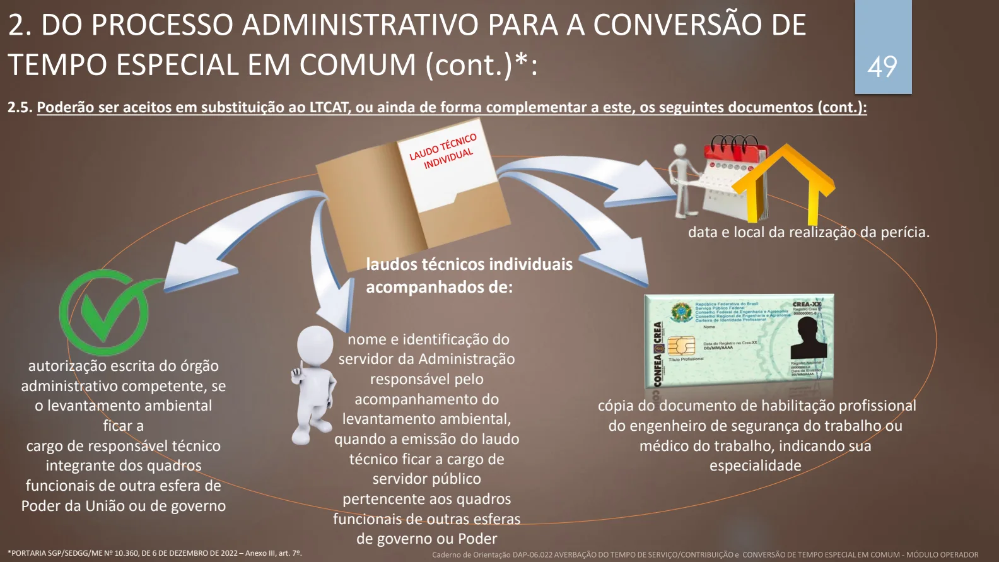
Processo administrativo para conversão
PDF · p. 502. DO PROCESSO ADMINISTRATIVO PARA A CONVERSÃO DE
TEMPO ESPECIAL EM COMUM (cont.)*:
*PORTARIA SGP/SEDGG/ME Nº 10.360, DE 6 DE DEZEMBRO DE 2022 – Anexo III, art. 7º.
Programa de Prevenção
de Riscos Ambientais -
PPRA
Programa de Gerenciamento de
Riscos - PGR
Programa de Condições e Meio Ambiente de Trabalho
na Indústria da Construção - PCMAT
Programa de Controle Médico de Saúde
Ocupacional - PCMSO.
2.5. Poderão ser aceitos em substituição ao LTCAT,ou ainda de forma complementar a este, os seguintes documentos (cont.):
Ver página original — tabelas, imagens e diagramas
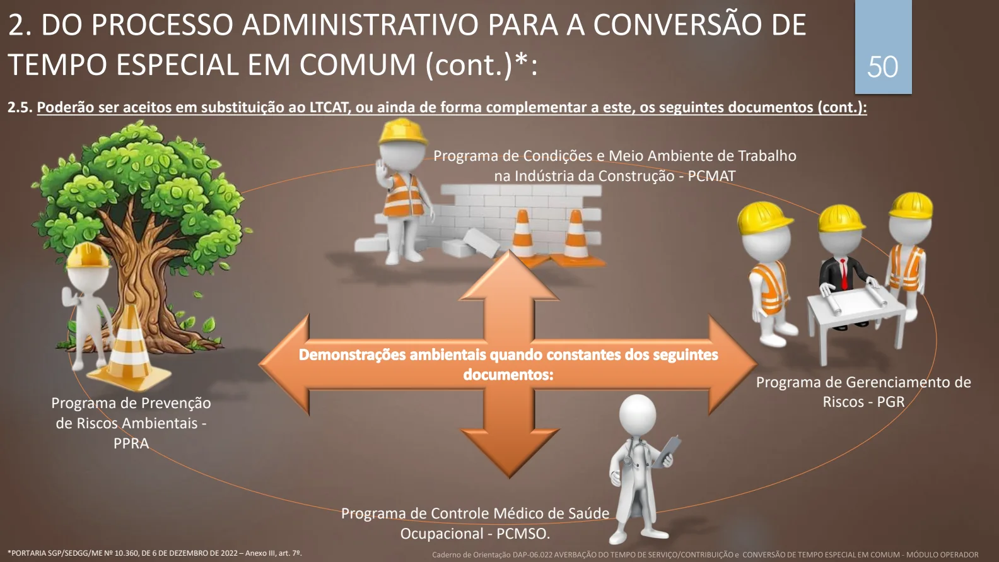
Processo administrativo para conversão
PDF · p. 512. DO PROCESSO ADMINISTRATIVO PARA A CONVERSÃO DE
TEMPO ESPECIAL EM COMUM (cont.)*:
*PORTARIA SGP/SEDGG/ME Nº 10.360, DE 6 DE DEZEMBRO DE 2022 – Anexo III, art. 6º, § 4º.
2.6. Para fins de comprovação do tempo de serviço público prestado sob condições especiais NÃO SERÃO ACEITOS os seguintes
documentos:
laudo relativo à atividade diversa,
salvo quando a atividade que se
pretende comprovar tiver sido
exercida no mesmo órgão público
laudo relativo a órgão público ou
equipamentos diversos, ainda que as
funções sejam
similares
laudo realizado em localidade
diversa daquela em que houve o
exercício da atividade.
Ver página original — tabelas, imagens e diagramas
Processo administrativo para conversão
PDF · p. 522. DO PROCESSO ADMINISTRATIVO PARA A CONVERSÃO DE
TEMPO ESPECIAL EM COMUM (cont.)*:
*PORTARIA SGP/SEDGG/ME Nº 10.360, DE 6 DE DEZEMBRO DE 2022 – Anexo III, art. 11 e 12.
O responsável por informações falsas, no todo ou em parte, inserida nos documentos constantes
no processo administrativo, responderá pela prática dos crimes previstos nos arts. 297 e 299 do
Código Penal.
Aplicam-se, no que couber, as disposições da Instrução Normativa SGP/SEDGG/ME Nº 15, de 16 de março
de 2022, da Secretaria de Gestão e Desempenho de Pessoal, que estabelece orientações sobre a
concessão dos adicionais de insalubridade, periculosidade, irradiação ionizante e gratificação por trabalhos
com raios-x ou substâncias radioativas, e dá outras providências.
ATENÇÃO!
O Anexo A deste Caderno de Orientações contém perguntas e respostas
sobre o assunto e pode ajudá-lo a dirimir dúvidas.
Ver página original — tabelas, imagens e diagramas
Processo administrativo para conversão
PDF · p. 53Esta página contém conteúdo gráfico. Consulte a reprodução original abaixo.
Ver página original — tabelas, imagens e diagramas
Tempo sob condições especiais
PDF · p. 541. DO TEMPO DE SERVIÇO SOB CONDIÇÕES ESPECIAIS A SER
CONSIDERADO*:
*PORTARIA SGP/SEDGG/ME Nº 10.360, DE 6 DE DEZEMBRO DE 2022 – Anexo III, art. 10.
1.1.
Consideram
-
se
tempo
de
serviço
sob
condições
especiais,
desde
que
o
segurado
estivesse
exercendo
atividade
considerada
especial
ao
tempo
das
seguintes
ocorrências
:
licença gestante, adotante
e paternidade
períodos de descanso
determinados pela legislação do
regime estatutário da União,
inclusive férias
licença/afastamento por motivo de acidente,
doença profissional ou doença do trabalho
aposentadoria por invalidez
acidentáriaausência por motivo de doação
de sangue
ausência por motivo de alistamento
como eleitor
ausência por motivo
de casamento
ausência por motivo de óbito de
pessoa da família.
ausência por motivo
participação em júri
Ver página original — tabelas, imagens e diagramas
Tempo sob condições especiais
PDF · p. 552. AVERBAÇÃO DE TEMPO ESPECIAL:
1
2
SOMENTE* haverá a averbação, no RPPS da União, de tempo especial de outros regimes, cumprido em qualquer época,
desde que a CTC, sem conversão em tempo comum e discriminados de data a data, em campo próprio, contenha as
informações dos servidores passíveis de aposentadoria especiais constantes nos §§ 4º, 4º-A, 4º-B e 4º-C do art. 40 e no
§1º, I e II do art. 201 da Constituição Federal de 5 de outubro de 1988, emitida nos seguintes períodos:
Servidor com deficiência:
a partir da vigência da Lei
Complementar editada pelo
ente federativo, conforme
atribuição do § 4º-A do art. 40
da Constituição Federal.
Segurado do RGPS com deficiência:
a partir da vigência da Lei
Complementar nº 142, de 8 de maio
de 2013.
3
Servidor ocupante do cargo de
policial civil regido pela Lei
Complementar nº 51, de 20 de
dezembro de 1985: a partir da
edição da referida lei.
4
Servidor ocupante do cargo de policial penal,
de agente penitenciário ou socioeducativo:
a partir da vigência da Lei Complementar
editada pelo Estado ou Distrito Federal,
conforme atribuição do § 4º-B do art. 40 da
Constituição Federal de 5 de outubro de 1988.
5
Servidor em exercício de atividades sob
condições especiais que prejudiquem a saúde
ou a integridade física, nos limites da Súmula
Vinculante nº 33:
até a vigência da Lei Complementar editada
pelo ente federativo, conforme atribuição do §
4º-C do art. 40 da Constituição Federal de 5 de
outubro de 1988.
*PORTARIA SGP/SEDGG/ME Nº 10.360, DE 6 DE DEZEMBRO DE 2022 – Anexo II, Capítulo III, art. 15
Ver página original — tabelas, imagens e diagramas
Tempo sob condições especiais
PDF · p. 562. AVERBAÇÃO DE TEMPO ESPECIAL (cont.):
6
7
SOMENTE* haverá a averbação, no RPPS da União, de tempo especial de outros regimes, cumprido em qualquer época,
desde que a CTC, sem conversão em tempo comum e discriminados de data a data, em campo próprio, contenha as
informações dos servidores passiveis de aposentadoria especiais constantes nos §§ 4º, 4º-A, 4º-B e 4º-C do art. 40 e no
§1º, I e II do art. 201 da Constituição Federal de 5 de outubro de 1988, emitida nos seguintes períodos (cont.):
Segurado do RGPS em exercício de
atividades sob condições especiais
que prejudiquem a saúde ou a
integridade física, até da vigência da
Emenda Constitucional nº 103, de
2019: conforme legislação vigente no
âmbito daquele regime.
Servidor cujas atividades sejam exercidas
com efetiva exposição a agentes químicos,
físicos e biológicos prejudiciais à saúde,
ou associação desses agentes: a partir da
vigência da Lei Complementar editada pelo
Estado, Distrito Federal ou município
conforme atribuição do § 4º-C do art. 40
da Constituição Federal
8
Segurado do RGPS cujas atividades sejam
exercidas com efetiva exposição a agentes
químicos, físicos e biológicos prejudiciais à
saúde, ou associação desses agentes: a
partir da vigência da Emenda Constitucional
nº 103, de 2019.
*PORTARIA SGP/SEDGG/ME Nº 10.360, DE 6 DE DEZEMBRO DE 2022 – Anexo II, Capítulo III, art. 15
Ver página original — tabelas, imagens e diagramas
Tempo sob condições especiais
PDF · p. 57Esta página contém conteúdo gráfico. Consulte a reprodução original abaixo.
Ver página original — tabelas, imagens e diagramas
Documentos necessários
PDF · p. 581. DOCUMENTOS NECESSÁRIOS:
PARA AVERBAÇÃO DE TEMPO COMUM
DOCUMENTO RESPONSÁVEL PELO
FORNECIMENTO OBSERVAÇÕES
a) Certidão de Tempo de Contribuição (CTC), emitida pelo
INSS; ou
b) Declaração de tempo de serviço emitida por outro órgão
ou entidade de outros entes federativos; ou
c) Certidão de Tempo de Serviço Militar - CTSM, fornecido
pelo órgão responsável pela gestão do Sistema de
Proteção Social dos Militares – SPSM
d) Declaração para Revisão de Certidão de Tempo de
Contribuição
Servidor Servidor deve solicitar ao responsável pela emissão do
documento para fins de instrução processual na sua OM
Requerimento Servidor No SPED – conforme descrição do item 2 desta parte deste CO
Informação OM No SPED – conforme descrição do item 2 desta parte deste CO
Ver página original — tabelas, imagens e diagramas
Documentos necessários
PDF · p. 591. DOCUMENTOS NECESSÁRIOS (cont.):
PARA CONVERSÃO DE TEMPO ESPECIAL EM COMUM
DOCUMENTO RESPONSÁVEL PELO
FORNECIMENTO OBSERVAÇÕES
a) formulário de informações sobre atividades exercidas em
condições especiais ou PPP;
b) Laudo Técnico de Condições Ambientais do Trabalho - LTCAT -
observado o disposto no art. 6º do Anexo III da Portaria
SGP/SEDGG/ME nº 10.360, de 6 de dezembro de 2022 ou os
documentos aceitos em substituição àquele, consoante o que
dispõe o art. 7º do Anexo III da Portaria SGP/SEDGG/ME nº
10.360, de 6 de dezembro de 2022;
c) parecer da perícia médica, em relação ao enquadramento por
exposição a agentes nocivos, na forma do art. 8º do Anexo III da
Portaria SGP/SEDGG/ME nº 10.360, de 6 de dezembro de 2022;
d) portaria de nomeação do servidor para investidura em cargo
público efetivo, cujas atividades sejam análogas às dos
profissionais das categorias presumidamente sujeitas a condições
especiais estabelecidas no do Anexo III da Portaria
SGP/SEDGG/ME nº 10.360, de 6 de dezembro de 2022 ou
portaria de designação do servidor para operar com raios X e
substâncias radioativas, na forma do Decreto nº 81.384, de 22 de
fevereiro de 1978, quando for o caso;
e) Portaria de designação do servidor para operar com raios X e
substâncias radioativas, quando for o caso; e
f) Declaração de Tempo Trabalhado sob Condições Especiais
Servidor após a emissão pelo
profissional competente
a) o formulário de informações ou Perfil Profissiográfico Previdenciário – PPP (será
emitido pelo órgão ou entidade responsável pelos assentamentos funcionais do
servidor público no correspondente período de exercício das atribuições do cargo
ou emprego público em condições especiais;
b) o LTCAT será elaborado por servidor público da esfera federal, estadual, distrital
ou municipal, ou militar, ocupante de cargo público ou posto militar de médico
com especialização em medicina do trabalho, ou de engenheiro ou de arquiteto
com especialização em segurança do trabalho;
c) a perícia médica, em relação ao enquadramento por exposição a agentes nocivos
conterá informações sobre a existência de tecnologia de proteção coletiva ou
individual e sobre a sua eficácia e será elaborado com observância às normas
editadas pelo Ministério do Trabalho e Previdência - MTP e aos procedimentos
adotados pelo INSS e será de responsabilidade de Perito Médico que integre, de
preferência, o quadro funcional da Administração Pública Federal;
d) Portaria com publicação no Diário Oficial da União (DOU);
e) Portaria com publicação no Diário Oficial da União (DOU);
f) Deverá conter os períodos de data à data trabalhados sob condições especiais e, o
Cargo ocupado e não a especialidade ou atribuições que servidor impactado
desempenha ou desempenhou no período informado.
Requerimento Servidor No SPED – conforme descrição da próxima página
Informação OM No SPED – conforme descrição da próxima página
Ver página original — tabelas, imagens e diagramas
Documentos no SPED
PDF · p. 602. REDIGINDO OS DOCUMENTOS NO SPED:
1
2
4
5
Requerimento Informação
3
6
Ver página original — tabelas, imagens e diagramas
Documentos no SPED
PDF · p. 61Esta página contém conteúdo gráfico. Consulte a reprodução original abaixo.
Ver página original — tabelas, imagens e diagramas
SERVIDOR
INTERESSADO
• Solicitar, no órgão ou
entidade responsável, a
CTC ou CTSM ou
declaração de tempo
de serviço.
• Fazer o requerimento
junto à OM de
vinculação.
OM
• Receber o
requerimento
• Elaborar a
informação
• Instruir o processo
com a verificação da
inclusão de todos os
documentos listados
nas páginas 22 ou 23
e em conformidade
com os preceitos da
Lei nº 9.784/99.
• Encaminhar o
processo à RM
enquadrante.
RM
• Conferir o processo.
• Encaminhar o
processo para a DAP .
DAP
• Analisar o processo e
realizar a averbação
ou conversão,
quando for o caso.
• Registrar o período
apurado nos sistemas
estruturantes.
• Publicar no Adt Téc
ao Bol DGP .
OM
•Informar ao
servidor sobre a
efetivação do
pedido;
•Extrair a portaria de
averbação/conversão
do Adt Téc ao Bol DGP ,
incluí-la no processo.
•Arquivar o processo
no módulo do
Assentamento
Funcional Digital
(AFD).
Ver página original — tabelas, imagens e diagramas
Fontes e elaboração
PDF · p. 63ELABORAÇÃO:
ASSESSORIA TÉCNICA DA SPC/DAP
SUBSEÇÃO DE CADASTRO DA SPC/DAP
ABRIL DE 2024
Para conhecer melhor o assunto, leia as
legislações indicadas no início deste caderno, disponíveis no link:
https://legis.sigepe.gov.br/legis/pesquisa-avancada
Ver página original — tabelas, imagens e diagramas
Perguntas frequentes e orientações
PDF · p. 64ANEXO A
Perguntas Frequentes e Orientações sobre a Conversão de Tempo Especial em Comum
MINISTÉRIO DA DEFESA EXÉRCITO BRASILEIRO
(escalões hierárquicos até a OM expedidora)
(Denominação histórica)
1. O QUE É, EFETIVAMENTE, A CONVERSÃO DE TEMPO ESPECIAL EM COMUM?
Resposta: Trata-se da aplicação de um fator de conversão sobre um período específico de
tempo de contribuição realizado em condições especiais, convertendo -o em tempo comum para fins de
aposentadoria. O servidor, ao solicitar esta conversão, está sinalizando que deseja se aposentar pela regra
comum e não pela regra especial, uma vez que o tempo convertido perderá sua característica especial.
Feita a conversão, o tempo especial não poderá mais ser usado para cumprir os requisitos das regras de
Aposentadoria Voluntária Especial.
2. QUAL O MARCO TEMPORAL PARA A CONVERSÃO DO TEMPO ESPECIAL EM COMUM?
Resposta: 13 de novembro de 2019, da seguinte forma:
• Os servidores públicos federais que exerceram atividades em condições especiais prejudiciais à
saúde ou à integridade física, ATÉ o dia 13 de novembro de 2019, PODERÃO ter esse tempo
convertido em tempo comum para fins de aposentadoria e contagem recíproca de tempo de
contribuição.
• Salvo decisão judicial expressa em contrário, é VEDADA a conversão de tempo especial em
comum para períodos laborados com efetiva exposição a agentes químicos, físicos e biológicos
prejudiciais à saúde, ou associação desses agentes A PARTIR de 13 de novembro de 2019.
3. A CONVERSÃO É FEITA DE FORMA AUTOMÁTICA PARA QUEM TEM TEMPO
ESPECIAL ATÉ 13/11/2019?
Resposta: Em regra, não. Existem basicamente três hipóteses de conversão:
• de tempo exercido sob condições especiais no próprio órgão: por opção do servidor e
dependente de sua solicitação; mediante instrução de processo administrativo, ou seja, não é
automático.
• de tempo especial anterior oriundo de outro Regime : dependente de indicação expressa, na
Certidão de Tempo de Contribuição , do período exercido sob condições especiais, no órgão
anterior. Esta opção também é vinculada à solicitação do servidor, mediante instrução de processo
administrativo, ou seja, não é automático.
• de tempo especial anterior oriundo de outro Regime e JÁ CONVERTIDO na Certidão em face de
decisão judicial: nesse caso, no ato da Averbação será realizado o registro do tempo já convertido
pelo regime de origem, desde que incluída também a decisão judicial que lhe deu causa. Neste
caso, a averbação ainda depende de provocação por meio de procedimento próprio.
4. QUAIS OS CASOS EM Q UE NÃO HÁ APLICABILIDADE DA CONVERSÃO DE TEMPO ESPECIAL EM
COMUM?
Ver página original — tabelas, imagens e diagramas
Perguntas frequentes e orientações
PDF · p. 65Resposta: A conversão de tempo especial em comum não se aplica:
• aos períodos de labor posterior a 13 de novembro de 2019;
• à conversão em tempo comum do tempo prestado pelo servidor na condição de pessoa com
deficiência, nem de conversão de tempo exercido para fins de aposentadoria de que trata a Lei
Complementar nº 51, de 20 de dezembro de 1985;
• ao tempo de efetivo exercício d as funções de magistério na educação infantil e no ensino
fundamental e médio, na hipótese de aposentadoria especial de professor a que se refere o § 5º do art.
40 da Constituição Federal de 5 de outubro de 1988, na redação anterior à reforma previdenciári a de
2019; e
• ao período de emprego público convertido em cargo público pelo art. 243 da Lei nº 8.112, de 1990,
que deverá ser atestado pelo RGPS.
5. QUAIS OS CRITÉRIOS PARA COMPROVAÇÃO DO EXERCÍCIO DAS ATRIBUIÇÕES DE CARGO
PÚBLICO EM CONDIÇÕES ESPECIAIS?
Resposta: O reconhecimento de tempo de serviço público do Poder Executivo federal
prestado sob condições especiais, prejudiciais à saúde ou à integridade física, dependerá de exercício
permanente, não ocasional ou intermitente, das atribuições do cargo em condições especiais,
prejudiciais à saúde ou à integridade física.
A obrigatoriedade do exercício permanente se estende, inclusive, no período em que o
servidor estiver em exercício de mandato eletivo; cedido, com ou sem ônus para o cessionário, a órgão
ou entidade da administração direta ou indireta, do mesmo ou de outro ente federativo, ou afa stado do
país por licenciamento.
ATENÇÃO!
• Não será admitida prova exclusivamente testemunhal ou apenas a comprovação
da percepção de adicional de insalubridade ou periculosidade ou gratificação por
trabalhos com Raios -X ou substâncias radioativas para fins de comprovação do
tempo de serviço público prestado sob condições especiais.
• É vedada a caracterização de submissão a condições especiais, prejudiciais à
saúde ou à integridade física, de forma presumida, em face da nomenclatura e
atribuições dos cargos públicos se assemelharem aos ex istentes na iniciativa
privada.
6. QUAL É O FATOR DE CONVERSÃO?
Resposta: De acordo com a legislação vigente, os fatores de conversão são:
• 1,20 para a mulher; e
• 1,40 para o homem.
De modo prático, multiplica-se o tempo de contribuição pelo fator de conversão, como no
exemplo abaixo:
TEMPO DE
CONTRIBUIÇÃO
ESPECIAL
FATOR DE CONVERSÃO CÁLCULO TEMPO
CONVERTIDO
HOMEM 10 anos 1,4 10 x 1,4 14 anos
MULHER 10 anos 1,2 10 x 1,2 12 anos
ATENÇÃO!
Ver página original — tabelas, imagens e diagramas
Perguntas frequentes e orientações
PDF · p. 66• Após a conversão de tempo especial em tempo comum, o período acrescido em
decorrência da aplicação dos fatores de conversão SERÁ CONSIDERADO como
tempo de contribuição para fins de elegibilidade à aposentadoria voluntária
comum, nas regras gerais ou de transição, MAS NÃO para o cômputo dos requisitos
de tempo de efetivo exercício no serviço público, de tempo na carreira ou de tempo
no cargo efetivo.
• É VEDADA a soma do tempo comum resultante da conversão de tempo especial em
comum, a qualquer outro tempo de natureza especial não convertido, SENDO
VEDADA também a conversão inversa, de tempo comum em tempo especial, com
vistas, em ambos estes casos, à concessão de aposentadoria voluntária especial.
7. É POSSÍVEL CONVERTER TEMPO ESPECIAL DE SERVIDOR (A) COM DEFICIÊNCIA?
Resposta: Não. Apesar da utilização da mesma nomenclatura para o tempo de contribuição
especial e o tempo de contribuição da pessoa com deficiência, É VEDADA A CONVERSÃO DO TEMPO
ESPECIAL DE SERVIDOR COM DEFICIÊNCIA EM COMUM.
A PREVISÃO LEGAL para este tipo de conversão é EXCLUSIVA para o tempo exercido com
exposição a agentes prejudiciais à saúde.
8. CONVERSÃO DE TEMPO ESPECIAL EM COMUM É A MESMA COISA QUE APOSENTADORIA
ESPECIAL POR EXPOSIÇÃO A AGENTES PREJUDICIAIS À SAÚDE?
Resposta: Não. Na ver dade, os dois são opostos: ou o (a) servidor (a) utiliza o tempo de
efetiva exposição como especial para preencher uma Regra de Aposentadoria Especial ou converte aquele
tempo em comum para aposentar por uma Regra Comum.
9. QUAIS DOCUMENTOS DEVEM COMPOR O PROCESSO ADMINISTRATIVO PARA A CONVERSÃO DE TEMPO
ESPECIAL EM COMUM?
Resposta: O processo administrativo para solicitação da conversão de tempo especial em
comum deverá ser INDIVIDUALIZADO e instruído com os seguintes documentos, CUMULATIVAMENTE:
DOCUMENTOS OBSERVAÇÕES OBSERVAÇÕES COMUNS
Formulário de informações (1) ou Perfil
Profissiográfico Previdenciário – PPP (2)
(1) O formulário somente será aceito
quando emitido ATÉ 31 de dezembro de
2003 e será aceito no modelo instituído
para o RGPS, segundo o seu período de
vigência, sob as siglas: SB-40, DISESBE
5235, DSS-8030 ou DIRBEN 8030
(2) Conforme Anexo V da Portaria
SGP/SEDGG/ME nº 10.360, de 6 de
dezembro de 2022 ou Anexo A d o Caderno
de Orientação - Averbação do Tempo de
Serviço/Contribuição e Conversão de
Tempo Especial em Comum - MÓDULO
SERVIDOR - DAP-06.021
Atenção! Tanto o PPP quanto o formulário,
podem ser emitidos pelo técnico
responsável pelo assentamento funcional
digital, ou seja, o servidor civil da Seção
Regional de Pessoal Civil da OM poderá
emitir um ou outro.
Apesar de a sua elaboração ser
permitida ao servidor civil, o
médico com especialização em
medicina do trabalho,
engenheiro ou arquiteto com
especialização em segurança do
trabalho poderão elaborar este
documento, desde que atenda
os critérios da Portaria
SGP/SEDGG/ME nº 10.360, de 6
de dezembro de 2022.
Ver página original — tabelas, imagens e diagramas
Perguntas frequentes e orientações
PDF · p. 67Parecer da perícia médica, em relação ao
enquadramento por exposição a agentes
nocivos
Sem modelo específico, a critério do perito
em segurança do trabalho (médico com
especialização em medicina do trabalho,
engenheiro ou arquiteto com
especialização em segurança do trabalho).
Poderá ser elaborado pelo
mesmo profissional que emitiu o
LTCAT
Laudo Técnico de Condições Ambientais
do Trabalho - LTCAT
a) Será elaborado por servidor
público da esfera federal, estadual, distrital
ou municipal, ou militar, ocupante de cargo
público ou posto militar de médico com
especialização em medicina do trabalho,
ou de engenheiro ou de arquiteto com
especialização em segurança do trabalho.
b) O enquadramento de atividade
especial por exposição ao agente físico
ruído, em qualquer época da prestação do
labor, exige laudo técnico pericial.
c) Em relação aos demais agentes
nocivos, o laudo t écnico pericial será
OBRIGATÓRIO para os períodos laborados
a partir de 14 de outubro de 1996.
d) É admitido o laudo técnico emitido
em data anterior ou posterior ao exercício
da atividade do servidor, se não houve
alteração no ambiente de trabalho ou em
sua organização, desde que haja ratificação
nesse sentido, pelo ocupante de cargo
público ou posto militar de médico com
especialização em medicina do trabalho, ou
de engenheiro ou de arquiteto com
especialização em segurança do trabalho.
e) O LTCAT se aplica à unidade (OM)
como um todo e possui validade
intederminada, podendo servir à outras
situações análogas futuras;
f) Poderão ser aceitos em
substituição ao LTCAT, ou ainda de forma
complementar a este, os seguintes
documentos:
1. laudos técnico -periciais emitidos
por determinação da Justiça do Trabalho,
em ações trabalhistas, acordos ou dissídios
coletivos;
2. laudos emitidos pela Fundacentro;
3. laudos emitidos pelo Ministério do
Trabalho e Previdência - MTP ou pelas
delegacias Regionais do Trabalho – DRT;
4. laudos técnicos individuais
acompanhados de:
• autorização escrita do órgão
administrativo competente, se o
levantamento ambiental ficar a cargo de
responsável técnico integrante dos quadros
funcionais de outra esfera de Poder da
União ou de governo;
• nome e ident ificação do servidor
da Administração responsável pelo
acompanhamento do levantamento
ambiental, quando a emissão do laudo
técnico ficar a cargo de servidor público
Ver página original — tabelas, imagens e diagramas
Perguntas frequentes e orientações
PDF · p. 68pertencente aos quadros funcionais de
outras esferas de governo ou Poder;
• data e local da r ealização da
perícia;
• cópia do documento de
habilitação profissional do engenheiro de
segurança do trabalho ou médico do
trabalho, indicando sua especialidade
5. Demonstrações ambientais
quando constantes dos seguintes
documentos:
• Programa de Prevenção de Ri scos
Ambientais – PPRA;
• Programa de Condiç ões e Meio
Ambiente de Trabalho na Indústria da
Construção – PCMAT;
• Programa de Gerenciamento de
Riscos – PGR;
• Programa de Controle Médico de
Saúde Ocupacional - PCMSO.
Portaria de nomeação do servidor para
investidura em cargo público efetivo,
cujas atividades sejam análogas às dos
profissionais das categorias
presumidamente sujeitas a condições
especiais
Publicação do Diário Oficial da União (DOU)
Portaria de designa ção do servidor para
operar com raios X e substâncias
radioativas, quando for o caso.
Publicação do Diário Oficial da União (DOU)
Declaração de Tempo Tr abalhado sob
Condições Especiais
Deverá conter os períodos de data à data
trabalhados sob condições especiais e, o
Cargo ocupado e não a especialidade ou
atribuições que servidor impactado
desempenha ou desempenhou no período
informado
10. QUAIS OS DOCUMENTOS NÃO SERÃO ACEITOS PARA FINS DE COMPROVAÇÃO DO TEMPO DE SERVIÇO
PÚBLICO PRESTADO SOB CONDIÇÕES ESPECIAIS:
Resposta:
• laudo relativo à atividade diversa, salvo quando a atividade que se pretende comprovar tiver sido exercida
no mesmo órgão público;
• laudo relativo a órgão público ou equipamentos diversos, ainda que as funções sejam similares; e
• laudo realizado em localidade diversa daquela em que houve o exercício da atividade.
11. SE HOUVER CUSTOS FINANCEIROS DECORRENTES DA EMISSÃO DE LAUDOS (LTCAT E/OU OUTROS
LAUDOS COMPLEMENTARES OU SUBSTITUTOS) PARA A CONVERSÃO DE TEMPO ESPECIAL EM COMUM, ESTES
RECAIRÃO SOBRE O SERVIDOR?
Resposta: Não. Estes custos financeiros recairão sobre a Administração, quais sejam: OM e Região
Militar enquadrante.
Ver página original — tabelas, imagens e diagramas